Material Listïƒ
Acoustic Foam (Category)ïƒ
Acustic Foam 001ïƒ
{kind=link}
Acustic Foam 002ïƒ

Acustic Foam 003ïƒ

Acustic Foam 004ïƒ
{kind=link}
Acustic Foam 005ïƒ

Acustic Foam 006ïƒ

Acustic Foam 007ïƒ

Asphalt - Damaged (Category)ïƒ
Asphalt Damaged 001ïƒ
{kind=link}
Asphalt Damaged 002ïƒ
{kind=link}
Asphalt Damaged 003ïƒ

Asphalt Damaged 004ïƒ

Asphalt Damaged 005ïƒ

Asphalt Damaged 006ïƒ
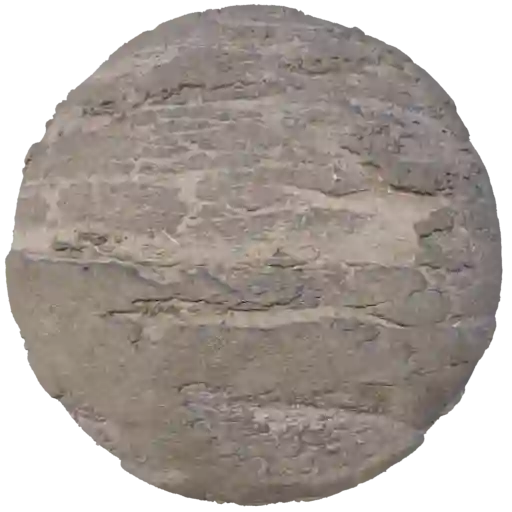{kind=link}
Asphalt Damaged 007ïƒ
{kind=link}
Asphalt Damaged 008ïƒ
{kind=link}
Asphalt Damaged 009ïƒ

Asphalt - Rough (Category)ïƒ
Asphalt Rough 001ïƒ
{kind=link}
Asphalt Rough 002ïƒ

Asphalt Rough 003ïƒ
{kind=link}
Asphalt Rough 004ïƒ

Asphalt Rough 005ïƒ

Asphalt Rough 006ïƒ
{kind=link}
Asphalt Rough 008ïƒ
{kind=link}
Asphalt Rough 009ïƒ

Asphalt - Smooth (Category)ïƒ
Asphalt Smooth 001ïƒ

Asphalt Smooth 002ïƒ
{kind=link}
Asphalt Smooth 003ïƒ
{kind=link}
Asphalt Smooth 004ïƒ

Asphalt Smooth 005ïƒ
{kind=link}
Asphalt Smooth 006ïƒ

Asphalt Smooth 007ïƒ
{kind=link}
Asphalt Smooth 008ïƒ
{kind=link}
Asphalt Smooth 009ïƒ

Asphalt Smooth 010ïƒ

Asphalt - Street (Category)ïƒ
Four Lane Road Clean 01ïƒ

Four Lane Road Cracks 01ïƒ
{kind=link}
Four Lane Road Patches 01ïƒ

Four Lane Road Patches 02ïƒ

Four Lane Road Wet 01ïƒ
{kind=link}
Four Lane Road Wet 02ïƒ

Highway Road Clean 01ïƒ

Highway Road Cracks 01ïƒ

Highway Road Patches 01ïƒ

Highway Road Patches 02ïƒ

Highway Road Wet 01ïƒ

Highway Road Wet 02ïƒ

Single Lane Road Clean 01ïƒ

Single Lane Road Cracks 01ïƒ

Single Lane Road Patches 01ïƒ

Single Lane Road Patches 02ïƒ

Single Lane Road Wet 01ïƒ

Single Lane Road Wet 02ïƒ

Three Lane Road Clean 01ïƒ

Three Lane Road Cracks 01ïƒ

Three Lane Road Patches 01ïƒ

Three Lane Road Patches 02ïƒ
{kind=link}
Three Lane Road Wet 01ïƒ

Three Lane Road Wet 02ïƒ
{kind=link}
Two Lane Dashed Line Road 01ïƒ
{kind=link}
Two Lane Road Clean 01ïƒ

Two Lane Road Cracks 01ïƒ

Two Lane Road Patches 01ïƒ

Two Lane Road Patches 02ïƒ
{kind=link}
Two Lane Road Wet 01ïƒ

Two Lane Road Wet 02ïƒ
{kind=link}
Two Lane Solid Line Road Clean 01ïƒ

Two Lane Solid Line Road Clean 02ïƒ

Two Lane Solid Line Road Clean 03ïƒ

Two Lane Solid Line Road Cracks 01ïƒ

Two Lane Solid Line Road Patches 01ïƒ
{kind=link}
Two Lane Solid Line Road Patches 02ïƒ
{kind=link}
Two Lane Solid Line Road Wet 01ïƒ

Two Lane Solid Line Road Wet 02ïƒ

Blueprint (Category)ïƒ
Blueprint 001ïƒ

Blueprint 002ïƒ
{kind=link}
Bricks - Classic (Category)ïƒ
Alternating Bricks 001ïƒ
{kind=link}
Bricks Red 001ïƒ
{kind=link}
Bricks Red 002ïƒ

Bricks Red 003ïƒ

Bricks Red 004ïƒ

Bricks Red 005ïƒ

Bricks Red 006ïƒ
{kind=link}
Bricks Red 007ïƒ

Bricks Red 008ïƒ
{kind=link}
Bricks Red 009ïƒ

Bricks Red 010ïƒ

Bricks Red 011ïƒ

Bricks Red 012ïƒ
{kind=link}
Bricks Red 013ïƒ

Bricks Red 014ïƒ

Bricks Red 015ïƒ
{kind=link}
Bricks Red 016ïƒ

Bricks Red 017ïƒ

Bricks Red 018ïƒ

Bricks Red 019ïƒ
{kind=link}
Bricks Red 020ïƒ

Bricks Red 021ïƒ
{kind=link}
Bricks Red 022ïƒ
{kind=link}
Bricks Red 023ïƒ

Bricks Red 024ïƒ

Bricks Red 025ïƒ

Bricks Red 026ïƒ
{kind=link}
Bricks Red 027ïƒ

Bricks Red 028ïƒ
{kind=link}
Bricks Red 029ïƒ

Bricks Red 030ïƒ

Grey Bricks 001ïƒ
{kind=link}
Grey Bricks 002ïƒ

Grey Bricks 003ïƒ
{kind=link}
Grey Bricks 004ïƒ
{kind=link}
Grey Bricks 005ïƒ
{kind=link}
Grey Bricks 006ïƒ

Grey Bricks 007ïƒ

Light Red Bricks 001ïƒ

Light Red Bricks 002ïƒ
{kind=link}
Stack Bond Bricks 001ïƒ

Yellow Bricks 001ïƒ

Bricks - Hollow (Category)ïƒ
Hollow Bricks 001ïƒ

Hollow Bricks 002ïƒ
{kind=link}
Hollow Bricks 003ïƒ

Hollow Bricks 004ïƒ
{kind=link}
Hollow Bricks 005ïƒ
{kind=link}
Hollow Bricks 006ïƒ

Hollow Bricks 007ïƒ

Hollow Bricks 008ïƒ

Hollow Bricks 009ïƒ
{kind=link}
Hollow Bricks 010ïƒ

Hollow Bricks 011ïƒ

Hollow Bricks 012ïƒ
{kind=link}
Bricks - Modern (Category)ïƒ
Modern Beige Bricks 001ïƒ

Modern Green Bricks 001ïƒ

Modern Green Bricks 002ïƒ
{kind=link}
Modern Green Bricks 003ïƒ
{kind=link}
Modern Grey Bricks 001ïƒ
{kind=link}
Modern Grey Bricks 002ïƒ

Modern Grey Bricks 003ïƒ

Modern Red Bricks 001ïƒ

Modern Red Bricks 002ïƒ

Modern Red Bricks 003ïƒ
{kind=link}
Bricks - Worn (Category)ïƒ
Bricks And Plaster 001ïƒ

Red Worn Bricks 001ïƒ
{kind=link}
Red Worn Bricks 002ïƒ
{kind=link}
Red Worn Bricks 003ïƒ

Red Worn Bricks 004ïƒ
{kind=link}
Red Worn Bricks 005ïƒ
{kind=link}
Red Worn Bricks 006ïƒ
{kind=link}
Red Worn Bricks 007ïƒ
{kind=link}
Red Worn Bricks 008ïƒ

Red Worn Bricks 009ïƒ

Red Worn Bricks 010ïƒ

Red Worn Bricks 011ïƒ

Red Worn Bricks 012ïƒ
{kind=link}
Red Worn Bricks 013ïƒ

Red Worn Bricks 014ïƒ

Red Worn Bricks 015ïƒ

Red Worn Bricks 016ïƒ

Red Worn Bricks 017ïƒ

Red Worn Bricks 018ïƒ

Red Worn Bricks 019ïƒ

Red Worn Bricks 020ïƒ
{kind=link}
Yellow Worn Bricks 001ïƒ

Yellow Worn Bricks 002ïƒ

Car (Category)ïƒ
Car Paint 001ïƒ

Rubber Tires Basic 001ïƒ

Ceiling - Office (Category)ïƒ
False Ceiling 01ïƒ

Office Ceiling 001ïƒ
{kind=link}
Office Ceiling 002ïƒ

Office Ceiling 003ïƒ

Office Ceiling 004ïƒ

Office Ceiling 005ïƒ

Office Ceiling 006ïƒ

Character - Organic (Category)ïƒ
Human Skin 001ïƒ
{kind=link}
Human Skin 002ïƒ

Human Skin 003ïƒ

Human Skin 004ïƒ

Human Skin 005ïƒ
{kind=link}
Human Skin 006ïƒ

Christmas Ornament (Category)ïƒ
Christmas Ornament 001ïƒ

Christmas Ornament 003ïƒ
{kind=link}
Christmas Ornament 004ïƒ

Christmas Ornament 005ïƒ
{kind=link}
Christmas Ornament 006ïƒ

Christmas Ornament 007ïƒ

Christmas Ornament 008ïƒ
{kind=link}
Clay (Category)ïƒ
Clay 001ïƒ
{kind=link}
Clay 002ïƒ
{kind=link}
Clay 003ïƒ
{kind=link}
Clay 004ïƒ
{kind=link}
Concrete - Blocks (Category)ïƒ
Concrete Blocks 001ïƒ
{kind=link}
Concrete Blocks 002ïƒ
{kind=link}
Concrete Blocks 003ïƒ
{kind=link}
Concrete Blocks 004ïƒ
{kind=link}
Concrete - Formed (Category)ïƒ
Concrete Formed 001ïƒ

Concrete Formed 002ïƒ
{kind=link}
Concrete Formed 003ïƒ

Concrete Formed 004ïƒ
{kind=link}
Concrete Formed 005ïƒ

Concrete Formed 006ïƒ
{kind=link}
Concrete Formed 007ïƒ

Concrete Formed 008ïƒ

Concrete Formed 009ïƒ
{kind=link}
Concrete Formed 010ïƒ
{kind=link}
Concrete Formed 011ïƒ
{kind=link}
Concrete Formed 012ïƒ

Concrete Formed 013ïƒ
{kind=link}
Concrete Formed 014ïƒ
{kind=link}
Concrete Formed 015ïƒ

Concrete Formed 016ïƒ

Concrete - Rough (Category)ïƒ
Concrete Rough 001ïƒ
{kind=link}
Concrete Rough 002ïƒ

Concrete Rough 003ïƒ

Concrete Rough 004ïƒ

Concrete Rough 005ïƒ
{kind=link}
Concrete Rough 006ïƒ

Concrete Rough 007ïƒ

Concrete Rough 008ïƒ

Concrete Rough 009ïƒ

Concrete Rough 010ïƒ

Concrete Rough 011ïƒ

Concrete Rough 012ïƒ

Concrete Rough 013ïƒ

Concrete Rough 014ïƒ
{kind=link}
Concrete Rough 015ïƒ
{kind=link}
Concrete Rough 016ïƒ

Concrete - Smooth (Category)ïƒ
Concrete 001ïƒ

Concrete 002ïƒ

Concrete 003ïƒ

Concrete 004ïƒ

Concrete 005ïƒ

Concrete 006ïƒ

Concrete 007ïƒ

Concrete 008ïƒ

Concrete 009ïƒ
{kind=link}
Concrete 010ïƒ

Concrete 011ïƒ

Concrete 012ïƒ

Concrete 013ïƒ
{kind=link}
Concrete 014ïƒ

Concrete 015ïƒ

Concrete 016ïƒ
{kind=link}
Concrete 017ïƒ
{kind=link}
Concrete 018ïƒ

Concrete 019ïƒ

Concrete 020ïƒ

Concrete 021ïƒ

Concrete 022ïƒ

Concrete 023ïƒ

Concrete 024ïƒ

Concrete 025ïƒ

Concrete Grunge Wall 01ïƒ

Corrugated - Various (Category)ïƒ
Corrugated Metal 001ïƒ
{kind=link}
Corrugated Metal 002ïƒ

Corrugated Metal 003ïƒ
{kind=link}
Corrugated Metal 004ïƒ

Corrugated Metal 005ïƒ
{kind=link}
Corrugated Metal 006ïƒ
{kind=link}
Corrugated Metal 007ïƒ

Corrugated Metal 008ïƒ
{kind=link}
Corrugated Metal 009ïƒ

Corrugated Metal 010ïƒ
{kind=link}
Metal Striped 001ïƒ

Decals - Leaking (Category)ïƒ
Leaking 001ïƒ

Leaking 002ïƒ

Leaking 003ïƒ

Leaking 004ïƒ
{kind=link}
Leaking 005ïƒ

Leaking 006ïƒ

Decals - Leaves (Category)ïƒ
Decal Leaves 001ïƒ

Decal Leaves 002ïƒ
{kind=link}
Decal Leaves 003ïƒ
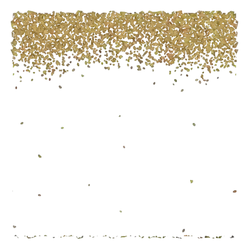{kind=link}
Decal Leaves 004ïƒ

Decal Leaves 005ïƒ
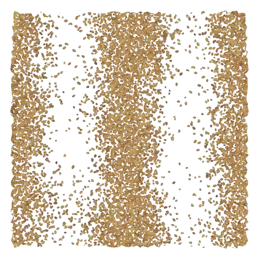{kind=link}
Decal Leaves 006ïƒ

Decal Leaves 007ïƒ
{kind=link}
Decals - Road (Category)ïƒ
Asphalt Patch 01ïƒ

Asphalt Patch 02ïƒ

Asphalt Patch 03ïƒ

Asphalt Patch 04ïƒ

Asphalt Patch 05ïƒ

Asphalt Patch 06ïƒ
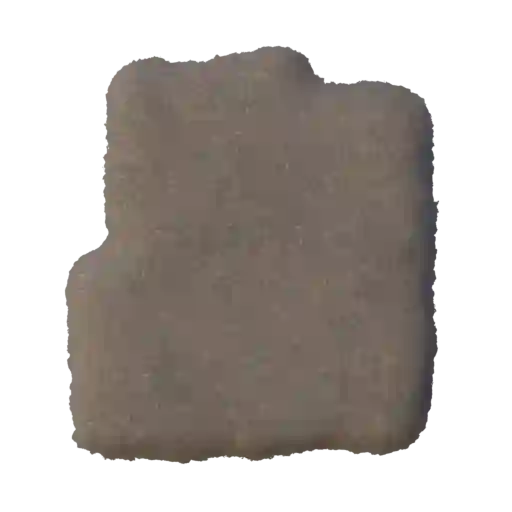{kind=link}
Asphalt Patch 07ïƒ

Manhole 001ïƒ
{kind=link}
Manhole 002ïƒ

Manhole 003ïƒ

Manhole 004ïƒ

Manhole 005ïƒ
{kind=link}
Manhole 006ïƒ

Decals - Road Markings (Category)ïƒ
Markings Arrows 001ïƒ

Markings Arrows 002ïƒ
{kind=link}
Markings Arrows 003ïƒ

Markings Arrows 004ïƒ
{kind=link}
Markings Pedestrian 01ïƒ

Markings Pedestrian Crossing 01ïƒ

Markings Pedestrian Crossing 02ïƒ

Markings Pedestrian Crossing 03ïƒ

Markings Text 001ïƒ

Markings Text 002ïƒ

Markings Vehicles 001ïƒ

Markings Vehicles 002ïƒ

Markings Vehicles 003ïƒ

Markings Vehicles 004ïƒ
{kind=link}
Markings Vehicles 005ïƒ

Markings Wheelchair 01ïƒ

Markings Yield Line 01ïƒ

Road Lines 001ïƒ

Road Lines 002ïƒ

Road Lines 003ïƒ

Road Lines 004ïƒ

Road Lines 005ïƒ

Road Lines 006ïƒ
{kind=link}
Electronics - Chip (Category)ïƒ
Chip 001ïƒ

Chip 002ïƒ

Chip 003ïƒ

Chip 004ïƒ

Chip 005ïƒ
{kind=link}
Chip 006ïƒ

Chip 007ïƒ
{kind=link}
Energy (Category)ïƒ
Solar Panel 001ïƒ

Solar Panel 002ïƒ
{kind=link}
Solar Panel 003ïƒ
{kind=link}
Solar Panel 004ïƒ
{kind=link}
Fabric (Category)ïƒ
Beige Fabric 001ïƒ
{kind=link}
Beige Fabric 002ïƒ

Blue Frabric 001ïƒ

Blue Frabric 002ïƒ

Blue Frabric 003ïƒ

Blue Frabric 004ïƒ
{kind=link}
Blue Frabric 005ïƒ
{kind=link}
Blue Frabric 006ïƒ

Blue Rag 01ïƒ

Brown Fabric 001ïƒ
{kind=link}
Brown Fabric 002ïƒ
{kind=link}
Brown Fabric 003ïƒ
{kind=link}
Brown Fabric 004ïƒ

Dark Fabric 001ïƒ

Dark Fabric 002ïƒ
{kind=link}
Dark Fabric 003ïƒ
{kind=link}
Dark Fabric 004ïƒ
{kind=link}
Green Fabric 001ïƒ
{kind=link}
Green Fabric 002ïƒ
{kind=link}
Green Fabric 003ïƒ
{kind=link}
Green Fabric 004ïƒ
{kind=link}
Grey Fabric 001ïƒ

Grey Fabric 002ïƒ
{kind=link}
Grey Fabric 003ïƒ

Grey Fabric 004ïƒ

Grey Fabric 005ïƒ
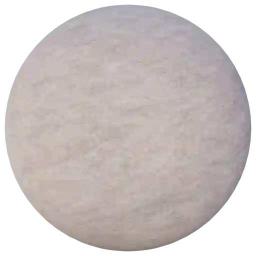{kind=link}
Grey Fabric 006ïƒ
{kind=link}
Grey Fabric 007ïƒ
{kind=link}
Grey Fabric 008ïƒ

Grey Rag 01ïƒ
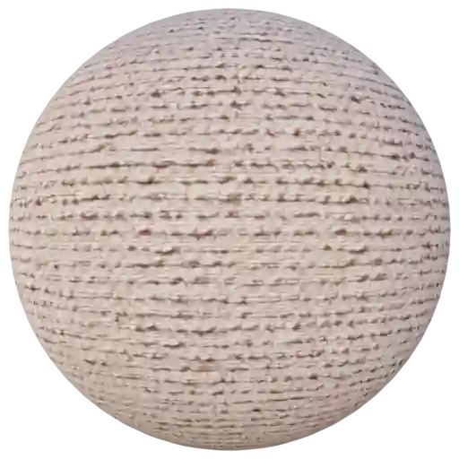{kind=link}
Merino Wool 01ïƒ

Orange Fabric 001ïƒ
{kind=link}
Paint Felt 01ïƒ
{kind=link}
Red Fabric 002ïƒ

Red Fabric 005ïƒ

Red Fabric 006ïƒ
{kind=link}
Red Fabric 007ïƒ

Red Fabric 008ïƒ

Red Fabric 009ïƒ

Red Fabric 010ïƒ

Red Fabric 011ïƒ
{kind=link}
Red Fabric 012ïƒ
{kind=link}
White Frabric 001ïƒ
{kind=link}
White Frabric 002ïƒ

White Frabric 003ïƒ
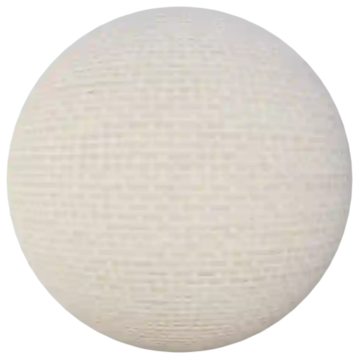{kind=link}
White Frabric 004ïƒ
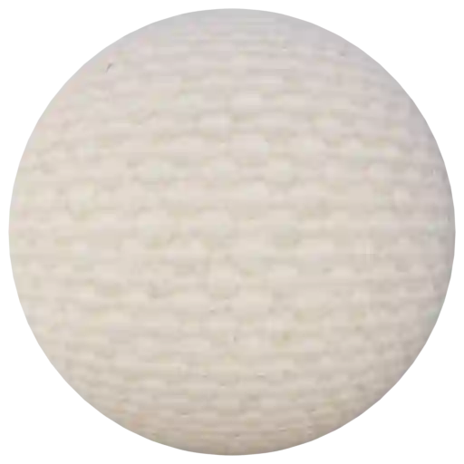{kind=link}
White Rag 01ïƒ

Yellow Fabric 001ïƒ

Fabric - Carpet (Category)ïƒ
Carpet 001ïƒ
{kind=link}
Carpet 002ïƒ

Carpet 003ïƒ
{kind=link}
Carpet 004ïƒ

Carpet 005ïƒ
{kind=link}
Carpet 006ïƒ

Carpet 008ïƒ
{kind=link}
Carpet 009ïƒ
{kind=link}
Carpet 010ïƒ
{kind=link}
Carpet 011ïƒ

Carpet 012ïƒ
{kind=link}
Carpet 013ïƒ

Carpet 014ïƒ

Carpet 015ïƒ
{kind=link}
Carpet 016ïƒ

Carpet 017ïƒ

Carpet 018ïƒ
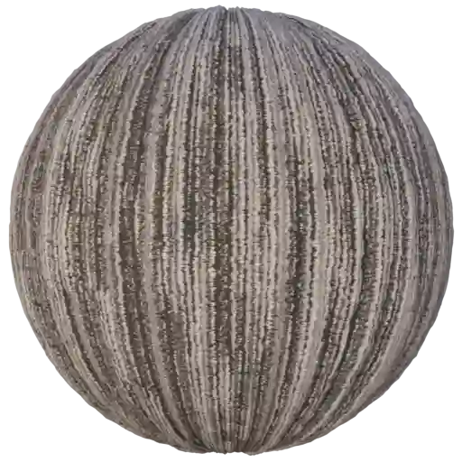{kind=link}
Carpet 019ïƒ

Carpet 020ïƒ

Casino Carpet 001ïƒ

Casino Carpet 002ïƒ
{kind=link}
Casino Carpet 003ïƒ

Casino Carpet 004ïƒ

Fabric - Jeans (Category)ïƒ
Jeans 001ïƒ

Jeans 002ïƒ
{kind=link}
Jeans 003ïƒ
{kind=link}
Jeans 004ïƒ

Jeans 005ïƒ

Jeans 006ïƒ

Jeans 007ïƒ
{kind=link}
Jeans 008ïƒ

Jeans 009ïƒ
{kind=link}
Jeans 010ïƒ

Fabric - Knitting (Category)ïƒ
Blue_Cotton_02ïƒ

Blue_Knittedïƒ
{kind=link}
Cloth_4ïƒ

Fabric Knitting 001ïƒ
{kind=link}
Fabric Knitting 002ïƒ

Fabric Knitting 003ïƒ

Fabric Knitting 004ïƒ

Fabric Knitting 005ïƒ
{kind=link}
Fabric Knitting 006ïƒ
{kind=link}
Fabric Knitting 007ïƒ
{kind=link}
Fabric Knitting 008ïƒ
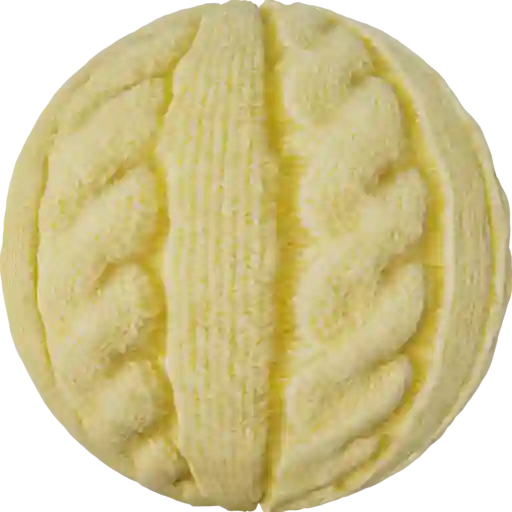{kind=link}
Fabric Knitting 009ïƒ

Fabric Knitting 010ïƒ
{kind=link}
Fabric Knitting 011ïƒ

Fabric Knitting 012ïƒ

Fabric Knitting 013ïƒ
{kind=link}
Fabric - Large (Category)ïƒ
Carbon Fiber 01ïƒ
{kind=link}
Carbon Fiber 02ïƒ
{kind=link}
Chainmail 001ïƒ
{kind=link}
Chainmail 002ïƒ
{kind=link}
Chainmail 003ïƒ

Chainmail 004ïƒ

Fabric Net 001ïƒ

Fabric Net 002ïƒ

Fabric Tulle 001ïƒ

Wicker 001ïƒ

Wicker 002ïƒ
{kind=link}
Wicker 003ïƒ

Wicker 004ïƒ

Wicker 005ïƒ
{kind=link}
Wicker 006ïƒ

Wicker 007ïƒ
{kind=link}
Wicker 008ïƒ

Wicker 009ïƒ

Wicker 010ïƒ

Wide Knit Fabric 001ïƒ
{kind=link}
Wide Knit Fabric 002ïƒ

Wide Knit Fabric 003ïƒ
{kind=link}
Fabric - Pattern (Category)ïƒ
Camouflage 001ïƒ

Camouflage 002ïƒ

Fabric Checkered 001ïƒ

Fabric Checkered 002ïƒ
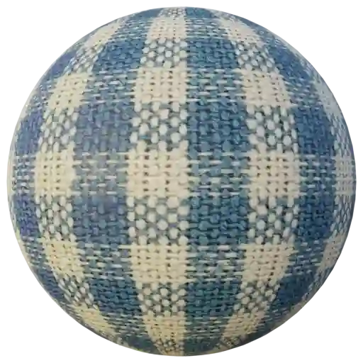{kind=link}
Fabric Checkered 003ïƒ

Fabric Pattern 001ïƒ

Fabric Pattern 002ïƒ

Fabric Pattern 003ïƒ
{kind=link}
Fabric007ïƒ
{kind=link}
Fabric008ïƒ
{kind=link}
Fabric009ïƒ
{kind=link}
Fabric024ïƒ
{kind=link}
Fabric025ïƒ
{kind=link}
Fabric027ïƒ

Fabric046ïƒ

Fabric047ïƒ

Fabric048ïƒ

Fabric049ïƒ
{kind=link}
Fabric_Plasticïƒ

Facade (Category)ïƒ
Windows Facade 001ïƒ

Windows Facade 002ïƒ

Windows Facade 003ïƒ

Windows Facade 004ïƒ
{kind=link}
Windows Facade 005ïƒ

Windows Facade 006ïƒ

Windows Facade 007ïƒ

Windows Facade 008ïƒ

Windows Facade 009ïƒ

Windows Facade 010ïƒ

Windows Facade 011ïƒ

Windows Facade 012ïƒ

Windows Facade 013ïƒ

Windows Facade 014ïƒ
{kind=link}
Windows Facade 015ïƒ
{kind=link}
Windows Facade 016ïƒ

Windows Facade 017ïƒ

Fences (Category)ïƒ
Fencer Wire 001ïƒ

Fencer Wire 002ïƒ

Fencer Wire 003ïƒ

Fencer Wire 004ïƒ

Fencer Wire 005ïƒ
{kind=link}
Fencer Wire 006ïƒ

Fencer Wire 007ïƒ
{kind=link}
Wood Fence 001ïƒ

Fluids (Category)ïƒ
Basic Waterïƒ

Food (Category)ïƒ
Candy 001ïƒ
{kind=link}
Candy 002ïƒ
{kind=link}
Candy 003ïƒ

Cold Cuts 01ïƒ
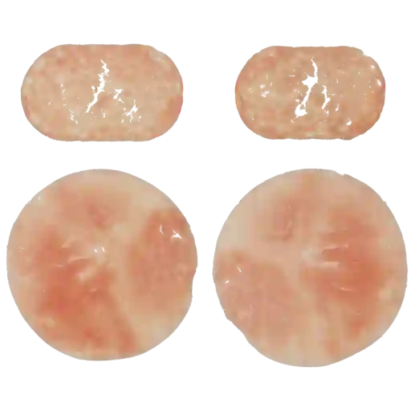{kind=link}
Corn Flakes 01ïƒ

Mixed Seeds 01ïƒ
{kind=link}
Oat Pops 01ïƒ

Pumpkin Seeds 01ïƒ
{kind=link}
Raisins 01ïƒ

Sunflower Seeds 01ïƒ

Glass (Category)ïƒ
Glass 001ïƒ

Gravel (Category)ïƒ
Gravel Coarse 001ïƒ
{kind=link}
Gravel Coarse 002ïƒ
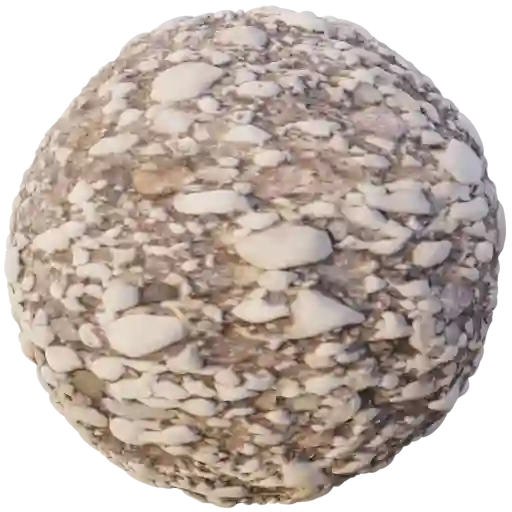{kind=link}
Gravel Coarse 003ïƒ
{kind=link}
Gravel Coarse 004ïƒ

Gravel Coarse 005ïƒ
{kind=link}
Gravel Coarse 006ïƒ
{kind=link}
Gravel Coarse 007ïƒ

Gravel Coarse 008ïƒ

Gravel Coarse 009ïƒ
{kind=link}
Gravel Coarse 010ïƒ

Gravel Coarse 011ïƒ
{kind=link}
Gravel Coarse 012ïƒ

Gravel Coarse 013ïƒ
{kind=link}
Gravel Coarse 014ïƒ
{kind=link}
Gravel Coarse 015ïƒ
{kind=link}
Gravel Coarse 016ïƒ
{kind=link}
Gravel Coarse 017ïƒ
{kind=link}
Gravel Coarse 018ïƒ

Gravel Fine 001ïƒ
{kind=link}
Gravel Fine 002ïƒ
{kind=link}
Gravel Fine 003ïƒ

Gravel Fine 004ïƒ
{kind=link}
Gravel Fine 005ïƒ

Gravel Fine 006ïƒ
{kind=link}
Gravel Fine 007ïƒ
{kind=link}
Gravel Fine 008ïƒ

Gravel Fine 009ïƒ

Gravel Fine 010ïƒ
{kind=link}
Gravel Fine 011ïƒ
{kind=link}
Ground - Sandy (Category)ïƒ
Sand Coarse 001ïƒ
{kind=link}
Sand Coarse 002ïƒ

Sand Coarse 003ïƒ

Sand Coarse 004ïƒ

Sand Fine 001ïƒ

Sand Fine 002ïƒ

Sand Fine 003ïƒ
{kind=link}
Sand Fine 004ïƒ

Sand Fine 005ïƒ
{kind=link}
Sand Fine 006ïƒ

Sand Fine 007ïƒ

Ground - Snow (Category)ïƒ
Snow 001ïƒ

Snow 002ïƒ

Snow 003ïƒ

Snow 004ïƒ
{kind=link}
Snow 005ïƒ

Snow 006ïƒ

Snow 007ïƒ
{kind=link}
Snow 008ïƒ

Snow 009ïƒ

Snow 010ïƒ
{kind=link}
Ground - Soil (Category)ïƒ
Burned Soil 01ïƒ

Dry Soil 001ïƒ

Dry Soil 002ïƒ

Dry Soil 003ïƒ
{kind=link}
Dry Soil 004ïƒ
{kind=link}
Dry Soil 005ïƒ

Dry Soil 006ïƒ

Soil 001ïƒ

Soil 002ïƒ

Soil 003ïƒ

Soil 004ïƒ

Soil 005ïƒ
{kind=link}
Soil 006ïƒ

Soil 007ïƒ

Soil 008ïƒ
{kind=link}
Soil 009ïƒ
{kind=link}
Soil 010ïƒ

Soil 011ïƒ

Soil 012ïƒ

Soil 013ïƒ

Soil 014ïƒ

Soil 015ïƒ
{kind=link}
Soil 016ïƒ

Soil 017ïƒ

Soil 018ïƒ

Soil 019ïƒ

Soil 020ïƒ
{kind=link}
Wood Snips Ground 01ïƒ
{kind=link}
Ground - Stony (Category)ïƒ
Stony Ground 001ïƒ

Stony Ground 002ïƒ
{kind=link}
Stony Ground 003ïƒ
{kind=link}
Stony Ground 004ïƒ
{kind=link}
Stony Ground 005ïƒ
{kind=link}
Stony Ground 006ïƒ
{kind=link}
Stony Ground 007ïƒ
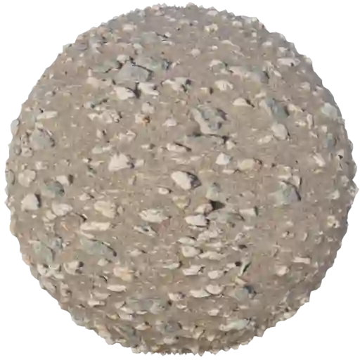{kind=link}
Stony Ground 008ïƒ
{kind=link}
Stony Ground 009ïƒ
{kind=link}
Stony Ground 010ïƒ
{kind=link}
Stony Ground 011ïƒ

Stony Ground 012ïƒ
{kind=link}
Stony Ground 013ïƒ
{kind=link}
Stony Ground 014ïƒ

Stony Ground 015ïƒ
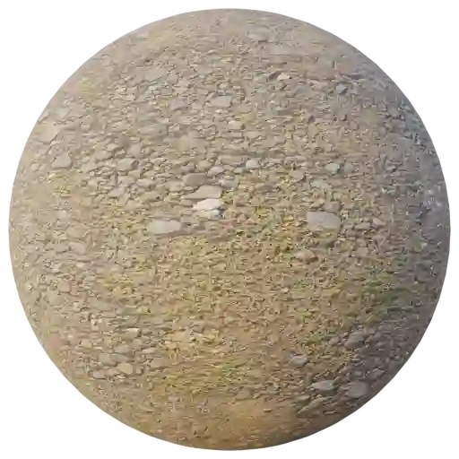{kind=link}
Stony Ground 016ïƒ

Stony Ground 017ïƒ
{kind=link}
Stony Ground 018ïƒ

Stony Ground 019ïƒ

Stony Ground 020ïƒ

Stony Ground 021ïƒ

Stony Ground 022ïƒ
{kind=link}
Stony Ground 023ïƒ
{kind=link}
Stony Ground 024ïƒ

Stony Ground 025ïƒ

Stony Ground 026ïƒ
{kind=link}
Stony Ground 027ïƒ

Stony Ground 028ïƒ
{kind=link}
Stony Ground 029ïƒ

Stony Ground 030ïƒ

Stony Ground 031ïƒ

Stony Path 001ïƒ
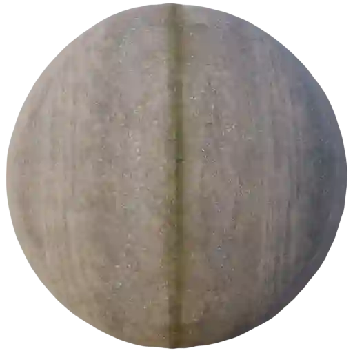{kind=link}
Ground - Undergrowth (Category)ïƒ
Ground Undergrowth 001ïƒ

Ground Undergrowth 002ïƒ
{kind=link}
Ground Undergrowth 003ïƒ

Ground Undergrowth 004ïƒ
{kind=link}
Ground Undergrowth 005ïƒ

Ground Undergrowth 006ïƒ
{kind=link}
Ground Undergrowth 007ïƒ

Ground Undergrowth 008ïƒ
{kind=link}
Ground Undergrowth 009ïƒ
{kind=link}
Ground Undergrowth 010ïƒ
{kind=link}
Ground Undergrowth 011ïƒ

Ground Undergrowth 012ïƒ
{kind=link}
Ground Undergrowth 013ïƒ

Ground Undergrowth 014ïƒ

Ground Undergrowth 015ïƒ

Ground Undergrowth 016ïƒ

Ground Undergrowth 017ïƒ

Ground Undergrowth 018ïƒ
{kind=link}
Ground Undergrowth 019ïƒ
{kind=link}
Ground Undergrowth 020ïƒ

Ground Undergrowth 021ïƒ
{kind=link}
Ground - Vegetation (Category)ïƒ
Aerial Grass Rock 01ïƒ

Fake Grass 001ïƒ

Fake Grass 002ïƒ

Fake Grass 003ïƒ

Fake Grass 004ïƒ

Fake Moss 001ïƒ
{kind=link}
Fake Moss 002ïƒ

Fake Moss 003ïƒ

Grass 001ïƒ

Grass 002ïƒ

Grass 003ïƒ

Grass 004ïƒ

Grass 005ïƒ
{kind=link}
Grass Tufts 01ïƒ

Ground Vegetation 001ïƒ

Moss 001ïƒ

Moss 002ïƒ

Soil Leaves 01ïƒ
{kind=link}
Ice (Category)ïƒ
Ice001ïƒ

Ice002ïƒ

Ice003ïƒ

Ice004ïƒ

Leather (Category)ïƒ
Leather Black 001ïƒ

Leather Black 002ïƒ

Leather Black 003ïƒ
{kind=link}
Leather Black 004ïƒ

Leather Black 005ïƒ
{kind=link}
Leather Black 006ïƒ

Leather Black 007ïƒ
{kind=link}
Leather Brown 001ïƒ

Leather Brown 002ïƒ
{kind=link}
Leather Brown 003ïƒ
{kind=link}
Leather Brown 004ïƒ
{kind=link}
Leather Brown 005ïƒ

Leather Brown 006ïƒ

Leather Brown 007ïƒ

Leather Brown 008ïƒ

Leather Brown 009ïƒ
{kind=link}
Leather Brown 010ïƒ

Leather Brown 011ïƒ
{kind=link}
Leather Brown 012ïƒ
{kind=link}
Leather Brown 013ïƒ

Leather Brown 014ïƒ
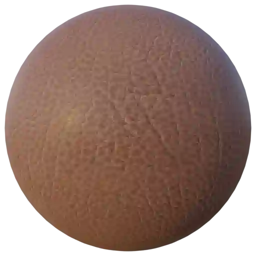{kind=link}
Leather Brown 015ïƒ
{kind=link}
Leather Brown 016ïƒ

Leather Brown 019ïƒ
{kind=link}
Leather Brown 020ïƒ

Leather Brown 022ïƒ
{kind=link}
Leather Green 001ïƒ

Leather Red 001ïƒ
{kind=link}
Leather Red 002ïƒ
{kind=link}
Leather Red 003ïƒ
{kind=link}
Leather Red 004ïƒ

Leather Red 005ïƒ

Leather Red 006ïƒ
{kind=link}
Leather White 001ïƒ

Leather - Stitching (Category)ïƒ
Leather Perforated 001ïƒ

Leather Perforated 002ïƒ

Leather Perforated 003ïƒ
{kind=link}
Leather Perforated 004ïƒ
{kind=link}
Leather Perforated 005ïƒ
{kind=link}
Leather Stitched 001ïƒ

Leather Stitched 002ïƒ
{kind=link}
Leather Tufted 001ïƒ

Leather Tufted 002ïƒ

Leather Tufted 003ïƒ
{kind=link}
Leather Tufted 005ïƒ

Leather Tufted 006ïƒ

Leaves - New (Category)ïƒ
Green Leaf 001ïƒ

Green Leaf 002ïƒ
{kind=link}
Green Leaf 003ïƒ
{kind=link}
Green Leaf 004ïƒ
{kind=link}
Green Leaf 005ïƒ

Green Leaf 006ïƒ
{kind=link}
Green Leaf 007ïƒ
{kind=link}
Green Leaf 008ïƒ

Green Leaf 009ïƒ

Green Leaf 010ïƒ

Green Leaf 011ïƒ
{kind=link}
Green Leaf 012ïƒ

Oak Leaf 001ïƒ

Oak Leaf 002ïƒ

Oak Leaf 003ïƒ

Oak Leaf 004ïƒ
{kind=link}
Oak Leaf 005ïƒ

Oak Leaf 006ïƒ
{kind=link}
Leaves - Old (Category)ïƒ
Autumn Leaf 001ïƒ

Autumn Leaf 002ïƒ

Autumn Leaf 003ïƒ

Autumn Leaf 004ïƒ

Autumn Leaf 005ïƒ
{kind=link}
Autumn Leaf 006ïƒ

Autumn Leaf 007ïƒ

Autumn Leaf 008ïƒ
{kind=link}
Autumn Leaf 009ïƒ

Autumn Leaf 010ïƒ
{kind=link}
Autumn Leaf 011ïƒ

Autumn Leaf 012ïƒ

Autumn Leaf 013ïƒ

Autumn Leaf 014ïƒ

Autumn Leaf 015ïƒ

Autumn Leaf 016ïƒ
{kind=link}
Autumn Leaf 017ïƒ

Autumn Leaf 018ïƒ

Autumn Leaf 019ïƒ

Autumn Leaf 020ïƒ
{kind=link}
Autumn Leaf 021ïƒ
{kind=link}
Autumn Leaf 022ïƒ
{kind=link}
Autumn Leaf 023ïƒ

Autumn Leaf 024ïƒ

Autumn Leaf 025ïƒ

Autumn Leaf 026ïƒ

Autumn Leaf 027ïƒ

Autumn Leaf 028ïƒ

Autumn Leaf 029ïƒ

Autumn Leaf 030ïƒ

Autumn Leaf 031ïƒ

Metal - Grid (Category)ïƒ
Metal Walkway 001ïƒ

Metal Walkway 002ïƒ

Metal Walkway 003ïƒ

Metal Walkway 004ïƒ

Metal Walkway 005ïƒ

Metal Walkway 006ïƒ
{kind=link}
Metal Walkway 007ïƒ
{kind=link}
Metal Walkway 008ïƒ

Metal Walkway 009ïƒ

Metal Walkway 010ïƒ

Metal Walkway 011ïƒ

Metal Walkway 012ïƒ

Metal Walkway 013ïƒ

Sheet Metal Grid 001ïƒ

Sheet Metal Grid 002ïƒ

Sheet Metal Grid 003ïƒ
{kind=link}
Sheet Metal Grid 004ïƒ
{kind=link}
Sheet Metal Grid 005ïƒ
{kind=link}
Sheet Metal Grid 006ïƒ
{kind=link}
Metal - Plates (Category)ïƒ
Circles Plate Metal 001ïƒ

Diamond Plate 001ïƒ

Diamond Plate 002ïƒ

Diamond Plate 003ïƒ

Diamond Plate 004ïƒ

Diamond Plate 005ïƒ

Diamond Plate 006ïƒ
{kind=link}
Diamond Plate 007ïƒ
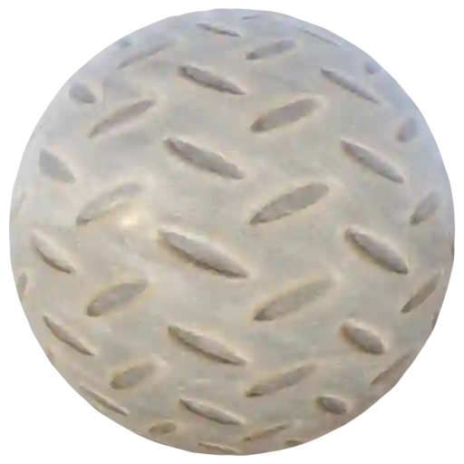{kind=link}
Diamond Plate 008ïƒ

Diamond Plate 009ïƒ
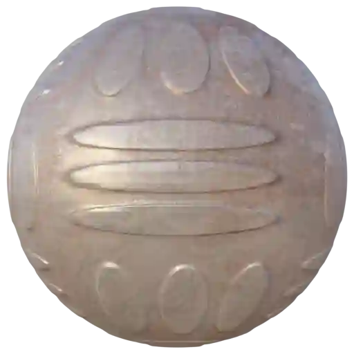{kind=link}
Diamond Plate 010ïƒ

Diamond Plate 011ïƒ

Diamond Plate 012ïƒ

Diamond Plate 013ïƒ

Diamond Plate 014ïƒ

Diamond Plate 015ïƒ

Metal Plates 001ïƒ

Metal Plates 002ïƒ
{kind=link}
Metal Plates 003ïƒ

Metal Plates 004ïƒ

Metal Plates 005ïƒ

Metal Plates 006ïƒ

Metal Plates 007ïƒ

Metal Plates 008ïƒ

Square Plate Metal 001ïƒ
{kind=link}
Metal - Raw (Category)ïƒ
Aluminum 01ïƒ
{kind=link}
Battered Metal 01ïƒ

Battered Metal 02ïƒ

Bronze 01ïƒ

Bronze 02ïƒ
{kind=link}
Bronze 03ïƒ

Bronze 04ïƒ

Brushed Gold 01ïƒ

Brushed Gold 02ïƒ
{kind=link}
Brushed Iron 01ïƒ
{kind=link}
Brushed Iron 02ïƒ
{kind=link}
Brushed Iron 03ïƒ
{kind=link}
Brushed Iron 04ïƒ
{kind=link}
Burnished Metal 001ïƒ

Burnished Metal 002ïƒ
{kind=link}
Burnished Metal 003ïƒ

Burnished Metal 004ïƒ

Burnished Metal 005ïƒ
{kind=link}
Burnished Metal 006ïƒ

Burnished Metal 007ïƒ

Copper 01ïƒ
{kind=link}
Galvanized Steel 001ïƒ

Galvanized Steel 002ïƒ
{kind=link}
Galvanized Steel 003ïƒ
{kind=link}
Gold Dirty 01ïƒ

Golden Metal 001ïƒ

Golden Metal 002ïƒ

Golden Metal 003ïƒ

Grunge Metal 001ïƒ

Grunge Metal 002ïƒ
{kind=link}
Grunge Metal 003ïƒ

Grunge Metal 004ïƒ

Grunge Metal 005ïƒ
{kind=link}
Grunge Metal 006ïƒ

Metal 001ïƒ

Metal 002ïƒ
{kind=link}
Metal 003ïƒ
{kind=link}
Metal 004ïƒ
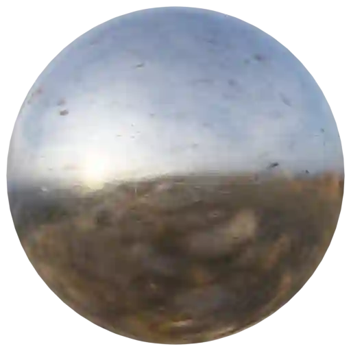{kind=link}
Metal 005ïƒ
{kind=link}
Metal 006ïƒ
{kind=link}
Metal 007ïƒ
{kind=link}
Old Iron 01ïƒ

Silver 01ïƒ
{kind=link}
Metal - Rusty (Category)ïƒ
Metal Rusty 001ïƒ
{kind=link}
Metal Rusty 002ïƒ

Metal Rusty 003ïƒ

Metal Rusty 004ïƒ
{kind=link}
Metal Rusty 005ïƒ

Metal Rusty 006ïƒ

Metal Rusty 007ïƒ
{kind=link}
Metal Rusty 008ïƒ

Metal Rusty 009ïƒ

Rust 001ïƒ
{kind=link}
Rust 002ïƒ

Rust 003ïƒ

Rust 004ïƒ
{kind=link}
Rust 005ïƒ

Shutter Rusty 01ïƒ
{kind=link}
Metal - Tiles (Category)ïƒ
Black Metal Tiles 001ïƒ
{kind=link}
Black Metal Tiles 002ïƒ

Black Metal Tiles 003ïƒ

Black Metal Tiles 004ïƒ

Brushed Metal Tiles 01ïƒ

Brushed Metal Tiles 02ïƒ

Brushed Metal Tiles 03ïƒ

Chopper Tiles 001ïƒ

Faux Leather Tiles 01ïƒ

Golden Faux Leather Tiles 01ïƒ

Golden Metal Tiles 001ïƒ
{kind=link}
Golden Metal Tiles 002ïƒ
{kind=link}
Golden Metal Tiles 003ïƒ
{kind=link}
Metal Tiles 001ïƒ
{kind=link}
Metal Tiles 002ïƒ

Metal Tiles 003ïƒ

Metal Tiles 004ïƒ
{kind=link}
Thin Stainless Steel Tiles 01ïƒ
{kind=link}
Metal - Worn Paint (Category)ïƒ
Blue Paint Metal 001ïƒ

Blue Paint Metal 002ïƒ

Blue Paint Metal 003ïƒ
{kind=link}
Blue Paint Metal 004ïƒ

Blue Paint Metal 005ïƒ

Green Paint Metal 001ïƒ

Green Paint Metal 002ïƒ

Green Paint Metal 003ïƒ
{kind=link}
Green Paint Metal 004ïƒ

Green Paint Metal 005ïƒ

Green Paint Metal 006ïƒ

Grey Paint Metal 001ïƒ
{kind=link}
Grey Paint Metal 002ïƒ
{kind=link}
Orange Paint Metal 001ïƒ

Red Paint Metal 001ïƒ

Sign Paint Metal 002ïƒ

Sign Paint Metal 003ïƒ
{kind=link}
Sign Paint Metal 004ïƒ

Sign Paint Metal 005ïƒ
{kind=link}
White Paint Metal 001ïƒ
{kind=link}
White Paint Metal 002ïƒ
{kind=link}
White Paint Metal 003ïƒ

White Paint Metal 004ïƒ

Yellow Paint Metal 001ïƒ

Yellow Paint Metal 002ïƒ

Yellow Paint Metal 003ïƒ
{kind=link}
Yellow Paint Metal 004ïƒ
{kind=link}
Yellow Paint Metal 005ïƒ

Paper & Cardboard (Category)ïƒ
Book Pages 01ïƒ

Cardboard 001ïƒ

Cardboard 002ïƒ
{kind=link}
Cardboard 003ïƒ

Cardboard 004ïƒ

Paper 001ïƒ

Paper 002ïƒ
{kind=link}
Paper 003ïƒ
{kind=link}
Parquet - Basketweave (Category)ïƒ
Basketweave Parquet 001ïƒ

Basketweave Parquet 002ïƒ
{kind=link}
Basketweave Parquet 003ïƒ
{kind=link}
Basketweave Parquet 004ïƒ
{kind=link}
Basketweave Parquet 005ïƒ
{kind=link}
Basketweave Parquet 006ïƒ

Basketweave Parquet 007ïƒ

Basketweave Parquet 008ïƒ

Basketweave Parquet 009ïƒ

Basketweave Parquet 010ïƒ

Basketweave Parquet 011ïƒ

Basketweave Parquet 012ïƒ

Basketweave Parquet 013ïƒ

Parquet - Herringbone (Category)ïƒ
Herringbone Parquet 001ïƒ
{kind=link}
Herringbone Parquet 002ïƒ

Herringbone Parquet 003ïƒ
{kind=link}
Herringbone Parquet 004ïƒ
{kind=link}
Herringbone Parquet 005ïƒ

Herringbone Parquet 006ïƒ
{kind=link}
Herringbone Parquet 007ïƒ

Herringbone Parquet 008ïƒ

Herringbone Parquet 009ïƒ

Herringbone Parquet 010ïƒ

Herringbone Parquet 011ïƒ

Herringbone Parquet 012ïƒ

Herringbone Parquet 013ïƒ

Herringbone Parquet 014ïƒ

Herringbone Parquet 015ïƒ

Herringbone Parquet 016ïƒ
{kind=link}
Parquet - Pattern Mix (Category)ïƒ
Parquet Pattern 001ïƒ
{kind=link}
Parquet Pattern 002ïƒ
{kind=link}
Parquet Pattern 003ïƒ

Parquet Pattern 004ïƒ
{kind=link}
Parquet - Straight (Category)ïƒ
Dark Straight Parquet 001ïƒ

Dark Straight Parquet 002ïƒ
{kind=link}
Dark Straight Parquet 003ïƒ
{kind=link}
Dark Straight Parquet 004ïƒ

Dark Straight Parquet 005ïƒ
{kind=link}
Dark Straight Parquet 006ïƒ
{kind=link}
Dark Straight Parquet 007ïƒ
{kind=link}
Dark Straight Parquet 008ïƒ
{kind=link}
Dark Straight Parquet 009ïƒ

Dark Straight Parquet 010ïƒ
{kind=link}
Dark Straight Parquet 011ïƒ
{kind=link}
Dark Straight Parquet 012ïƒ

Dark Straight Parquet 013ïƒ
{kind=link}
Light Straight Parquet 001ïƒ

Light Straight Parquet 002ïƒ

Light Straight Parquet 003ïƒ
{kind=link}
Light Straight Parquet 004ïƒ

Light Straight Parquet 005ïƒ

Light Straight Parquet 006ïƒ

Light Straight Parquet 007ïƒ

Light Straight Parquet 008ïƒ

Light Straight Parquet 009ïƒ
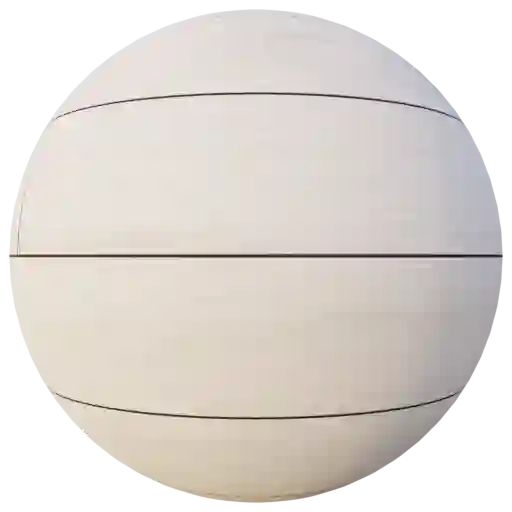{kind=link}
Light Straight Parquet 010ïƒ
{kind=link}
Light Straight Parquet 011ïƒ

Light Straight Parquet 012ïƒ

Light Straight Parquet 013ïƒ

Light Straight Parquet 014ïƒ

Light Straight Parquet 015ïƒ

Light Straight Parquet 016ïƒ

Straight Parquet 001ïƒ
{kind=link}
Straight Parquet 002ïƒ

Straight Parquet 003ïƒ
{kind=link}
Straight Parquet 004ïƒ

Straight Parquet 005ïƒ

Straight Parquet 006ïƒ

Straight Parquet 007ïƒ
{kind=link}
Straight Parquet 008ïƒ

Straight Parquet 009ïƒ

Pavers - Grid (Category)ïƒ
Pavers Grid 001ïƒ
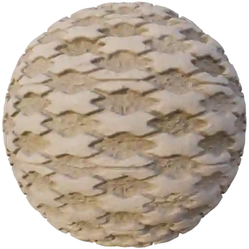{kind=link}
Pavers Grid 002ïƒ
{kind=link}
Pavers Grid 003ïƒ

Pavers Grid 004ïƒ

Pavers Grid 005ïƒ
{kind=link}
Pavers Grid 006ïƒ
{kind=link}
Pavers Grid 007ïƒ
{kind=link}
Pavers Grid 008ïƒ
{kind=link}
Pavers - Herringbone (Category)ïƒ
Herringbone Bricks Pavers 001ïƒ

Herringbone Bricks Pavers 002ïƒ

Herringbone Brown Pavers 001ïƒ

Herringbone Grey Pavers 001ïƒ

Herringbone Grey Pavers 002ïƒ

Herringbone Grey Pavers 003ïƒ

Herringbone Grey Pavers 004ïƒ
{kind=link}
Herringbone Grey Pavers 005ïƒ
{kind=link}
Herringbone Grey Pavers 006ïƒ

Herringbone Grey Pavers 007ïƒ

Herringbone Grey Pavers 010ïƒ
{kind=link}
Herringbone Red Pavers 001ïƒ

Herringbone Red Pavers 002ïƒ

Herringbone Red Pavers 004ïƒ
{kind=link}
Herringbone Red Pavers 005ïƒ

Herringbone Red Pavers 006ïƒ

Herringbone Red Pavers 007ïƒ
{kind=link}
Herringbone Red Pavers 008ïƒ

Herringbone Z_Zag Pavers 001ïƒ
{kind=link}
Herringbone Z_Zag Pavers 002ïƒ
{kind=link}
Herringbone Z_Zag Pavers 003ïƒ

Herringbone Z_Zag Pavers 004ïƒ
{kind=link}
Pavers - Offset (Category)ïƒ
I_Shape Grey Pavers 001ïƒ

I_Shape Grey Pavers 002ïƒ
{kind=link}
I_Shape Grey Pavers 003ïƒ
{kind=link}
I_Shape Grey Pavers 004ïƒ

I_Shape Grey Pavers 005ïƒ
{kind=link}
I_Shape Red Pavers 001ïƒ

Offset Bricks Pavers 001ïƒ
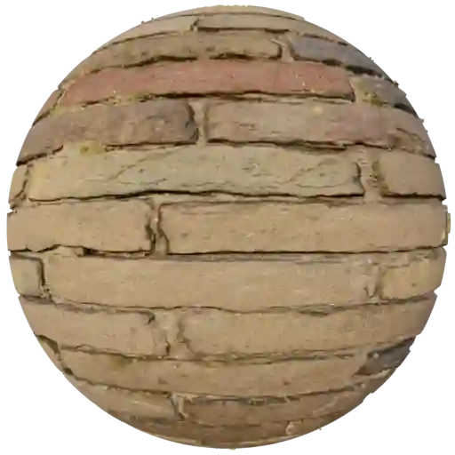{kind=link}
Offset Bricks Pavers 002ïƒ
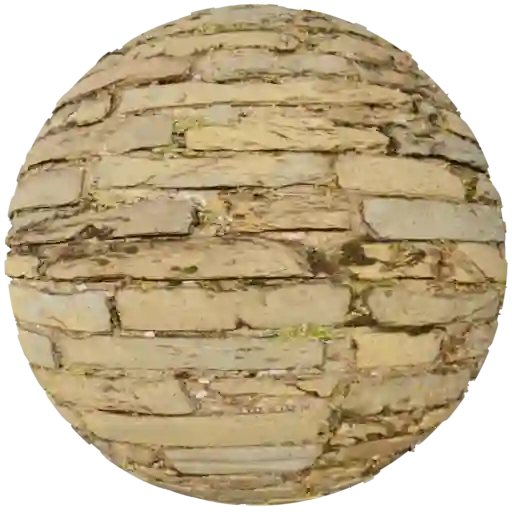{kind=link}
Offset Grey Pavers 001ïƒ

Offset Grey Pavers 002ïƒ
{kind=link}
Offset Grey Pavers 003ïƒ

Offset Grey Pavers 004ïƒ

Offset Grey Pavers 005ïƒ

Offset Grey Pavers 006ïƒ
{kind=link}
Offset Grey Pavers 007ïƒ

Offset Grey Pavers 008ïƒ
{kind=link}
Offset Grey Pavers 009ïƒ
{kind=link}
Offset Grey Pavers 010ïƒ

Offset Grey Pavers 011ïƒ

Offset Grey Pavers 012ïƒ

Offset Grey Pavers 013ïƒ
{kind=link}
Offset Grey Pavers 014ïƒ
{kind=link}
Offset Grey Pavers 015ïƒ
{kind=link}
Offset Red Pavers 001ïƒ

Offset Red Pavers 002ïƒ
{kind=link}
Offset Red Pavers 003ïƒ

Offset Red Pavers 004ïƒ
{kind=link}
Offset Red Pavers 005ïƒ
{kind=link}
Offset Red Pavers 006ïƒ
{kind=link}
Offset Red Pavers 007ïƒ

Offset Red Pavers 008ïƒ
{kind=link}
Offset Red Pavers 009ïƒ

Offset Red Pavers 010ïƒ
{kind=link}
Offset Red Pavers 011ïƒ
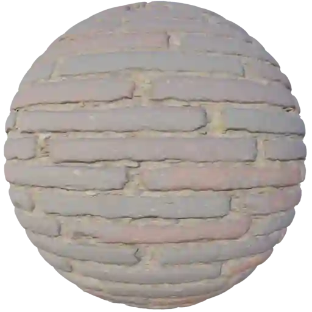{kind=link}
Offset Z_Zag Pavers 001ïƒ

Pavers - Pattern Mix (Category)ïƒ
Basketweave Grey Pavers 001ïƒ

Basketweave Red Pavers 001ïƒ

Basketweave Red Pavers 002ïƒ

Basketweave Red Pavers 003ïƒ
{kind=link}
Basketweave Z_Zag Pavers 001ïƒ
{kind=link}
Basketweave Z_Zag Pavers 002ïƒ
{kind=link}
Hexagonal Black Pavers 001ïƒ

Hexagonal Grey Pavers 001ïƒ

Octagonal Black Pavers 001ïƒ
{kind=link}
Octagonal Grey Pavers 001ïƒ
{kind=link}
Paving Edge 001ïƒ
{kind=link}
Random Grey Pavers 001ïƒ
{kind=link}
Random Red Pavers 001ïƒ

Pavers - Stone Cube (Category)ïƒ
Cubes Cobblestone Paving 001ïƒ
{kind=link}
Cubes Cobblestone Paving 002ïƒ

Cubes Cobblestone Paving 003ïƒ
{kind=link}
Cubes Cobblestone Paving 004ïƒ
{kind=link}
Cubes Cobblestone Paving 005ïƒ

Cubes Cobblestone Paving 006ïƒ
{kind=link}
Cubes Cobblestone Paving 007ïƒ

Cubes Cobblestone Paving 008ïƒ

Cubes Cobblestone Paving 009ïƒ

Cubes Cobblestone Paving 010ïƒ

Cubes Cobblestone Paving 011ïƒ

Cubes Cobblestone Paving 012ïƒ

Cubes Cobblestone Paving 013ïƒ
{kind=link}
Cubes Cobblestone Paving 014ïƒ

Cubes Cobblestone Paving 015ïƒ

Cubes Cobblestone Paving 016ïƒ

Cubes Cobblestone Paving 017ïƒ
{kind=link}
Cubes Cobblestone Paving 018ïƒ
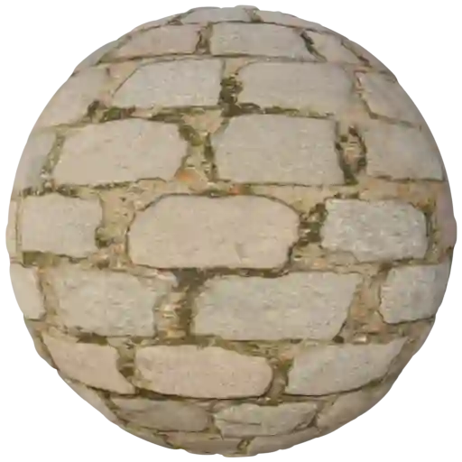{kind=link}
Cubes Cobblestone Paving 019ïƒ
{kind=link}
Cubes Cobblestone Paving 020ïƒ

Fan Pattern Cbst Paving 001ïƒ
{kind=link}
Fan Pattern Cbst Paving 002ïƒ

Fan Pattern Cbst Paving 003ïƒ

Fan Pattern Cbst Paving 004ïƒ

Fan Pattern Cbst Paving 005ïƒ

Fan Pattern Cbst Paving 006ïƒ
{kind=link}
Fan Pattern Cbst Paving 007ïƒ

Pattern Cobblestone Paving 001ïƒ
{kind=link}
Pattern Cobblestone Paving 002ïƒ

Pattern Cobblestone Paving 003ïƒ

Pattern Cobblestone Paving 004ïƒ

Pattern Cobblestone Paving 005ïƒ

Pattern Cobblestone Paving 006ïƒ
{kind=link}
Pattern Cobblestone Paving 007ïƒ
{kind=link}
Pattern Cobblestone Paving 008ïƒ
{kind=link}
Pattern Cobblestone Paving 009ïƒ

Pavers - Stones (Category)ïƒ
Irregular Stone Pavers 001ïƒ
{kind=link}
Irregular Stone Pavers 002ïƒ
{kind=link}
Irregular Stone Pavers 003ïƒ

Irregular Stone Pavers 004ïƒ
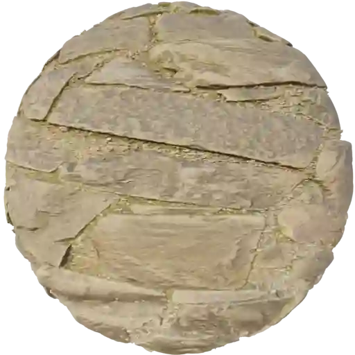{kind=link}
Irregular Stone Pavers 005ïƒ

Irregular Stone Pavers 006ïƒ

Irregular Stone Pavers 007ïƒ
{kind=link}
Offset Stone Pavers 001ïƒ

Offset Stone Pavers 002ïƒ

Offset Stone Pavers 003ïƒ

Offset Stone Pavers 004ïƒ
{kind=link}
Offset Stone Pavers 005ïƒ

Offset Stone Pavers 006ïƒ

Offset Stone Pavers 007ïƒ

Offset Stone Pavers 008ïƒ

Offset Stone Pavers 009ïƒ

Offset Stone Pavers 010ïƒ

Offset Stone Pavers 011ïƒ

Offset Stone Pavers 012ïƒ

Offset Stone Pavers 013ïƒ

Offset Stone Pavers 014ïƒ

Offset Stone Pavers 016ïƒ

Rounded Stone Pavers 001ïƒ

Rounded Stone Pavers 002ïƒ

Pipe (Category)ïƒ
Metal Pipe 001ïƒ

Metal Pipe 002ïƒ
{kind=link}
Metal Pipe 003ïƒ

Metal Pipe 004ïƒ

Plaster - Wall (Category)ïƒ
Beige Plaster 001ïƒ
{kind=link}
Beige Plaster 002ïƒ

Beige Plaster 003ïƒ

Beige Plaster 004ïƒ

Blue Plaster 001ïƒ

Blue Plaster 002ïƒ

Brown Plaster 001ïƒ
{kind=link}
Concrete Plaster 001ïƒ

Concrete Plaster 002ïƒ
{kind=link}
Concrete Plaster 003ïƒ
{kind=link}
Green Plaster 001ïƒ

Green Plaster 002ïƒ
{kind=link}
Green Plaster 003ïƒ
{kind=link}
Grey Plaster 001ïƒ
{kind=link}
Grey Plaster 002ïƒ
{kind=link}
Grey Plaster 003ïƒ

Grey Plaster 004ïƒ
{kind=link}
Grey Plaster 005ïƒ
{kind=link}
Grey Plaster 006ïƒ

Grey Plaster 007ïƒ

Orange Plaster 001ïƒ

Pink Plaster 001ïƒ

Pink Plaster 002ïƒ
{kind=link}
Pink Plaster 003ïƒ
{kind=link}
Red Plaster 001ïƒ

Red Plaster 002ïƒ
{kind=link}
White Plaster 001ïƒ

White Plaster 002ïƒ

White Plaster 003ïƒ

White Plaster 004ïƒ

White Plaster 005ïƒ

White Plaster 006ïƒ

White Plaster 007ïƒ

White Plaster 008ïƒ
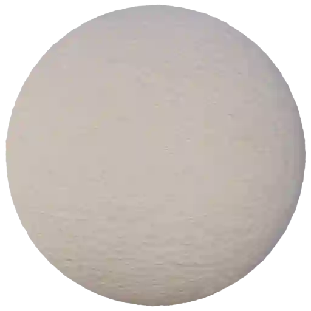{kind=link}
White Plaster 009ïƒ

Yellow Plaster 001ïƒ

Yellow Plaster 002ïƒ

Yellow Plaster 003ïƒ

Plaster - Worn (Category)ïƒ
Worn Plaster 001ïƒ

Worn Plaster 002ïƒ
{kind=link}
Worn Plaster 003ïƒ

Worn Plaster 004ïƒ
{kind=link}
Worn Plaster 005ïƒ

Worn Plaster 006ïƒ
{kind=link}
Worn Plaster 007ïƒ

Worn Plaster 008ïƒ

Worn Plaster 009ïƒ

Worn Plaster 010ïƒ

Worn Plaster 011ïƒ

Worn Plaster 012ïƒ

Worn Plaster 013ïƒ
{kind=link}
Worn Plaster 014ïƒ

Worn Plaster 015ïƒ

Worn Plaster 018ïƒ
{kind=link}
Worn Plaster Bricks 002ïƒ

Plastic (Category)ïƒ
Beige Plastic 001ïƒ

Black Plastic 001ïƒ
{kind=link}
Blue Plastic 001ïƒ

Blue Plastic 002ïƒ

Brown Plastic 001ïƒ
{kind=link}
Brown Plastic 002ïƒ

Green Plastic 001ïƒ
{kind=link}
Grey Plastic 001ïƒ

Grey Plastic 002ïƒ
{kind=link}
Orange Plastic 001ïƒ
{kind=link}
White Plastic 001ïƒ
{kind=link}
Procedural (Category)ïƒ
Blend Mix 001ïƒ

Chess 001ïƒ
{kind=link}
Plasma 001ïƒ
{kind=link}
Wireframe 001ïƒ
{kind=link}
Rock - Solid (Category)ïƒ
Black Rock 001ïƒ
{kind=link}
Black Rock 002ïƒ

Blue Rock 001ïƒ
{kind=link}
Brown Rock 001ïƒ
{kind=link}
Brown Rock 002ïƒ

Brown Rock 003ïƒ

Brown Rock 004ïƒ

Brown Rock 005ïƒ

Brown Rock 006ïƒ
{kind=link}
Brown Rock 007ïƒ

Brown Rock 008ïƒ
{kind=link}
Brown Rock 009ïƒ

Brown Rock 010ïƒ

Brown Rock 011ïƒ
{kind=link}
Brown Rock 012ïƒ
{kind=link}
Brown Rock 013ïƒ

Brown Rock 014ïƒ
{kind=link}
Brown Rock 015ïƒ

Brown Rock 016ïƒ

Brown Rock 017ïƒ

Brown Rock 018ïƒ
{kind=link}
Brown Rock 019ïƒ

Brown Rock 020ïƒ

Brown Rock 021ïƒ
{kind=link}
Brown Rock 022ïƒ
{kind=link}
Green Rock 001ïƒ
{kind=link}
Grey Rock 001ïƒ

Grey Rock 002ïƒ
{kind=link}
Grey Rock 003ïƒ

Grey Rock 004ïƒ

Grey Rock 005ïƒ
{kind=link}
Grey Rock 006ïƒ
{kind=link}
Grey Rock 007ïƒ
{kind=link}
Grey Rock 008ïƒ

Grey Rock 009ïƒ

Grey Rock 010ïƒ
{kind=link}
Grey Rock 011ïƒ
{kind=link}
Grey Rock 012ïƒ
{kind=link}
Grey Rock 013ïƒ
{kind=link}
Grey Rock 014ïƒ

Grey Rock 015ïƒ
{kind=link}
Grey Rock 016ïƒ

Grey Rock 017ïƒ

Grey Rock 018ïƒ

Grey Rock 019ïƒ
{kind=link}
Grey Rock 020ïƒ
{kind=link}
Mossy Rock 001ïƒ
{kind=link}
Mossy Rock 002ïƒ

Mossy Rock 003ïƒ
{kind=link}
Mossy Rock 004ïƒ
{kind=link}
Mossy Rock 005ïƒ

Mossy Rock 006ïƒ

Mossy Rock 007ïƒ

Mossy Rock 008ïƒ

Mossy Rock 009ïƒ
{kind=link}
Mossy Rock 010ïƒ
{kind=link}
Mossy Rock 011ïƒ

Seaside Rocks 001ïƒ

Seaside Rocks 002ïƒ

White Rock 001ïƒ
{kind=link}
White Rock 002ïƒ
{kind=link}
White Rock 003ïƒ
{kind=link}
White Rock 004ïƒ

White Rock 005ïƒ
{kind=link}
Roof (Category)ïƒ
Canadian Red Roof 001ïƒ

Clay Roof 001ïƒ
{kind=link}
Clay Roof 002ïƒ
{kind=link}
Concrete Roof 001ïƒ

Metal Roof 001ïƒ
{kind=link}
Old Clay Roof 001ïƒ
{kind=link}
Old Clay Roof 002ïƒ

Old Clay Roof 003ïƒ
{kind=link}
Old Clay Roof 004ïƒ

Old Clay Roof 005ïƒ

Old Concrete Roof 001ïƒ
{kind=link}
Slate Roof 001ïƒ
{kind=link}
Slate Roof 002ïƒ

Slate Roof 003ïƒ

Slate Roof 004ïƒ
{kind=link}
Slate Roof 005ïƒ

Slate Roof 006ïƒ

Slate Roof 007ïƒ

Slate Roof 008ïƒ
{kind=link}
Thatching Roof 001ïƒ

Thatching Roof 002ïƒ

Thatching Roof 003ïƒ

Wood Slats Roof 001ïƒ
{kind=link}
Ropes (Category)ïƒ
Rope 001ïƒ

Rope 002ïƒ

Rope 003ïƒ
{kind=link}
Sign (Category)ïƒ
Sign Danger Orange 001ïƒ

Sign Danger Orange 002ïƒ
{kind=link}
Sign Danger Orange 003ïƒ

Sign Danger Red 001ïƒ

Sign Danger Red 002ïƒ

Sign Danger Yellow 001ïƒ

Sign Danger Yellow 002ïƒ
{kind=link}
Sign Danger Yellow 003ïƒ

Sign Danger Yellow 004ïƒ

Sign Danger Yellow 005ïƒ

Sign Danger Yellow 006ïƒ
{kind=link}
Sign Danger Yellow 007ïƒ

Sign Danger Yellow 008ïƒ
{kind=link}
Sign Danger Yellow 009ïƒ
{kind=link}
Sign Danger Yellow 010ïƒ
{kind=link}
Sign Danger Yellow 011ïƒ
{kind=link}
Sign Danger Yellow 012ïƒ

Sign Danger Yellow 013ïƒ

Sign Danger Yellow 014ïƒ

Sign Danger Yellow 015ïƒ

Sign Danger Yellow 016ïƒ

Sign Danger Yellow 017ïƒ

Sign Danger Yellow 018ïƒ

Sign Danger Yellow 019ïƒ
{kind=link}
Sign Danger Yellow 020ïƒ

Tape Danger 001ïƒ

Tape Danger 002ïƒ
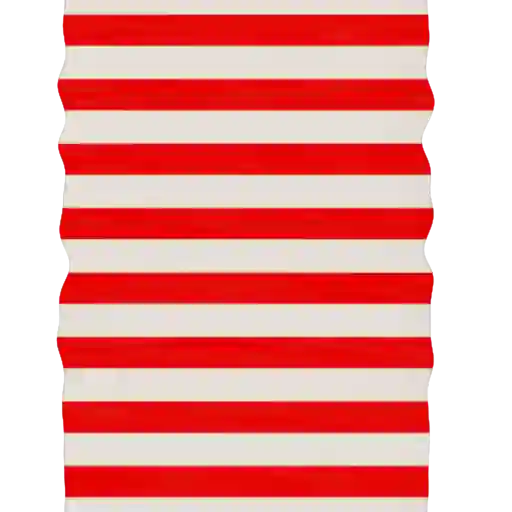{kind=link}
Tape Danger 003ïƒ

Sponge (Category)ïƒ
Sponge 001ïƒ

Sponge 002ïƒ
{kind=link}
Sponge 003ïƒ

Stone - Granite (Category)ïƒ
Granite Blue 001ïƒ

Granite Red 001ïƒ

Granite White 001ïƒ

Stone - Marble (Category)ïƒ
Marble Black 001ïƒ

Marble Black 002ïƒ

Marble Black 003ïƒ
{kind=link}
Marble Black 004ïƒ

Marble Brown 001ïƒ

Marble Brown 002ïƒ

Marble Brown 003ïƒ

Marble Brown 004ïƒ

Marble Brown 005ïƒ

Marble Green 001ïƒ

Marble Green 002ïƒ
{kind=link}
Marble Green 003ïƒ

Marble Green 004ïƒ

Marble Green 005ïƒ

Marble White 001ïƒ

Marble White 002ïƒ
{kind=link}
Marble White 003ïƒ

Marble White 004ïƒ
{kind=link}
Marble White 005ïƒ

Marble White 006ïƒ

Marble White 007ïƒ

Marble White 008ïƒ
{kind=link}
Marble White 009ïƒ

Marble White 010ïƒ

Surface Imperfections (Category)ïƒ
Dirt 001ïƒ
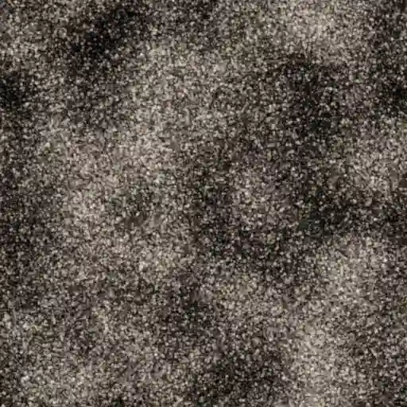{kind=link}
Dirt 002ïƒ
{kind=link}
Dirt 003ïƒ
{kind=link}
Dirt 004ïƒ

Dirt 005ïƒ

Dirt 006ïƒ

Dirt 007ïƒ

Dripping Paint 001ïƒ

Dust Wipes 01ïƒ
{kind=link}
Fingerprints 001ïƒ

Fingerprints 002ïƒ

Fingerprints 003ïƒ
{kind=link}
Fingerprints 004ïƒ
{kind=link}
Fingerprints 005ïƒ

Fingerprints 006ïƒ

Fingerprints 007ïƒ

Fingerprints 008ïƒ

Fingerprints 009ïƒ

Fingerprints 010ïƒ

Fingerprints 011ïƒ

Fingerprints 012ïƒ
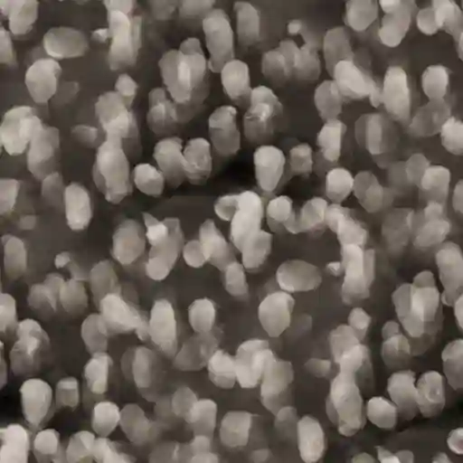{kind=link}
Fingerprints 013ïƒ

Fingerprints 014ïƒ
{kind=link}
Fingerprints 015ïƒ

Footsteps 001ïƒ

Handprint 001ïƒ
{kind=link}
Handprint 002ïƒ

Imperfections 001ïƒ
{kind=link}
Imperfections 002ïƒ
{kind=link}
Imperfections 003ïƒ
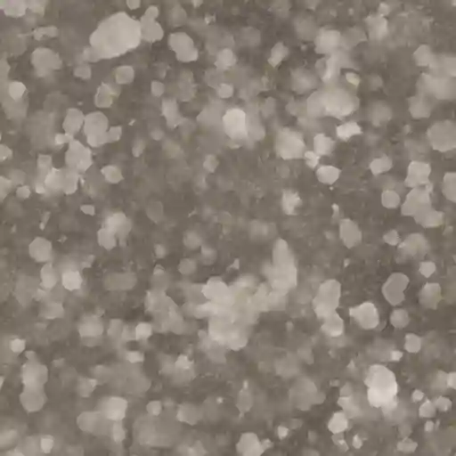{kind=link}
Imperfections 004ïƒ

Imperfections 005ïƒ

Imperfections 006ïƒ

Imperfections 007ïƒ

Imperfections 008ïƒ

Imperfections 009ïƒ

Imperfections 010ïƒ
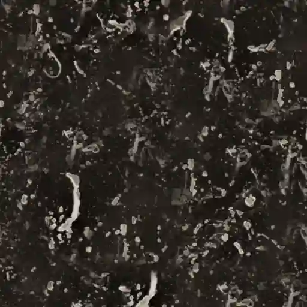{kind=link}
Liquid Stains 001ïƒ

Liquid Stains 002ïƒ

Liquid Stains 003ïƒ

Round Stains 001ïƒ

Round Stains 002ïƒ

Round Stains 003ïƒ
{kind=link}
Scratches 001ïƒ

Scratches 002ïƒ
{kind=link}
Scratches 003ïƒ

Scratches 004ïƒ

Scratches 005ïƒ

Scratches 006ïƒ

Scratches 007ïƒ

Smear 001ïƒ

Smear 002ïƒ

Smear 003ïƒ
{kind=link}
Smear 004ïƒ

Smear 005ïƒ

Smear 006ïƒ

Smear 007ïƒ
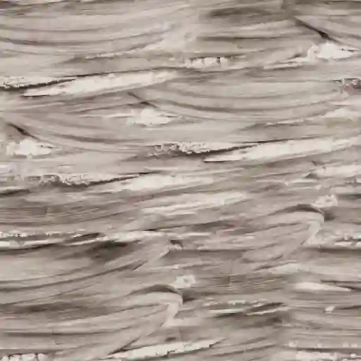{kind=link}
Water Droplets 001ïƒ

Water Droplets 002ïƒ

Water Droplets 003ïƒ
{kind=link}
Terrazzo (Category)ïƒ
Terrazzo 001ïƒ

Terrazzo 002ïƒ
{kind=link}
Terrazzo 003ïƒ

Terrazzo 004ïƒ

Terrazzo 005ïƒ

Terrazzo 006ïƒ
{kind=link}
Terrazzo 007ïƒ
{kind=link}
Terrazzo 008ïƒ
{kind=link}
Tiles - Exterior (Category)ïƒ
Concrete Fake Tiles 001ïƒ

Concrete Grey Tiles 001ïƒ

Concrete Grey Tiles 002ïƒ

Concrete Grey Tiles 003ïƒ

Concrete Grey Tiles 004ïƒ
{kind=link}
Concrete Grey Tiles 005ïƒ

Offset Concrete Tiles 001ïƒ
{kind=link}
Offset Concrete Tiles 002ïƒ

Offset Stone Grey Tiles 001ïƒ

Offset Stone Grey Tiles 002ïƒ
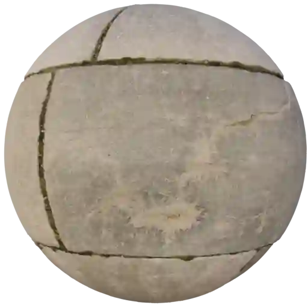{kind=link}
Offset Stone Grey Tiles 003ïƒ
{kind=link}
Offset Stone Red Tiles 001ïƒ

Rectangular Stone Tiles 001ïƒ

Rectangular Stone Tiles 002ïƒ

Square Concrete Tiles 001ïƒ

Square Stone Grey Tiles 001ïƒ

Square Stone Grey Tiles 002ïƒ

Square Stone Grey Tiles 003ïƒ
{kind=link}
Square Stone Grey Tiles 005ïƒ

Square Stone Grey Tiles 008ïƒ
{kind=link}
Square Stone Red Tiles 001ïƒ

Tactile White Tiles 01ïƒ

Tactile Yellow Tiles 01ïƒ

Tactile Yellow Tiles 02ïƒ

Tiles - Grid (Category)ïƒ
Diamond Beige 001ïƒ

Diamond Mc 001ïƒ

Rectangular Beige Grid Tiles 001ïƒ
{kind=link}
Rectangular Black Tiles 001ïƒ

Rectangular Black Tiles 002ïƒ
{kind=link}
Rectangular Blue Grid Tiles 001ïƒ

Rectangular Grey Tiles 001ïƒ

Rectangular Grey Tiles 002ïƒ

Rectangular Grey Tiles 003ïƒ

Rectangular White Grid Tiles 001ïƒ

Rectangular White Grid Tiles 002ïƒ

Rectangular White Grid Tiles 003ïƒ
{kind=link}
Rectangular White Grid Tiles 004ïƒ

Rectangular White Grid Tiles 005ïƒ

Square Beige Grid Tiles 001ïƒ

Square Beige Grid Tiles 002ïƒ
{kind=link}
Square Beige Grid Tiles 003ïƒ

Square Beige Grid Tiles 004ïƒ

Square Beige Grid Tiles 005ïƒ

Square Beige Grid Tiles 006ïƒ

Square Beige Grid Tiles 007ïƒ
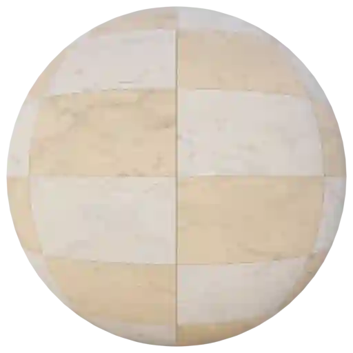{kind=link}
Square Beige Grid Tiles 008ïƒ
{kind=link}
Square Black Grid Tiles 001ïƒ

Square Black Grid Tiles 002ïƒ

Square Blue Grid Tiles 001ïƒ
{kind=link}
Square Blue Grid Tiles 002ïƒ

Square Blue Grid Tiles 003ïƒ

Square Blue Grid Tiles 004ïƒ
{kind=link}
Square Blue Grid Tiles 005ïƒ

Square Brown Grid Tiles 001ïƒ

Square Brown Grid Tiles 002ïƒ
{kind=link}
Square Bw Grid Tiles 001ïƒ

Square Bw Grid Tiles 002ïƒ

Square Bw Grid Tiles 003ïƒ

Square Bw Grid Tiles 004ïƒ

Square Bw Grid Tiles 005ïƒ

Square Bw Grid Tiles 006ïƒ

Square Cyan Grid Tiles 001ïƒ

Square Green Grid Tiles 001ïƒ

Square Green Grid Tiles 002ïƒ

Square Green Grid Tiles 003ïƒ

Square Green Grid Tiles 004ïƒ
{kind=link}
Square Grey Grid Tiles 001ïƒ

Square Grey Grid Tiles 002ïƒ

Square Grey Grid Tiles 003ïƒ

Square Grey Grid Tiles 004ïƒ

Square Grey Grid Tiles 005ïƒ

Square Grey Grid Tiles 006ïƒ
{kind=link}
Square White Grid Tiles 001ïƒ

Square White Grid Tiles 002ïƒ
{kind=link}
Square White Grid Tiles 003ïƒ

Square White Grid Tiles 004ïƒ
{kind=link}
Square White Grid Tiles 005ïƒ

Square White Grid Tiles 006ïƒ

Square White Grid Tiles 007ïƒ

Square White Grid Tiles 008ïƒ

Square White Grid Tiles 009ïƒ
{kind=link}
Terrazzo Blue Tiles 001ïƒ
{kind=link}
Terrazzo Green Tiles 001ïƒ

Terrazzo Grey Tiles 001ïƒ

Terrazzo White Tiles 001ïƒ

Terrazzo White Tiles 002ïƒ

Terrazzo Yellow Tiles 001ïƒ

Tiles - Herringbone (Category)ïƒ
Herringbone Black Tiles 001ïƒ
{kind=link}
Herringbone Blue Tiles 001ïƒ
{kind=link}
Herringbone Marble Tiles 001ïƒ

Herringbone White Tiles 001ïƒ

Tiles - Hexagonal (Category)ïƒ
Hexagonal Brown Tiles 001ïƒ
{kind=link}
Hexagonal Brown Tiles 002ïƒ

Hexagonal Brown Tiles 003ïƒ

Hexagonal Brown Tiles 004ïƒ

Hexagonal Brown Tiles 005ïƒ

Hexagonal Green Tiles 001ïƒ

Hexagonal Green Tiles 002ïƒ

Hexagonal Green Tiles 003ïƒ

Hexagonal Green Tiles 004ïƒ

Hexagonal Green Tiles 005ïƒ
{kind=link}
Hexagonal White Tiles 001ïƒ

Hexagonal White Tiles 002ïƒ

Hexagonal White Tiles 003ïƒ
{kind=link}
Tiles - Mix (Category)ïƒ
Circle Small Tiles 001ïƒ
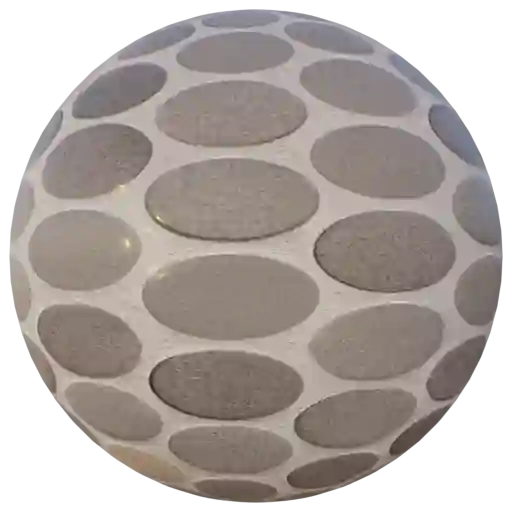{kind=link}
Deco Tiles 001ïƒ
{kind=link}
Deco Tiles 002ïƒ

Deco Tiles 003ïƒ
{kind=link}
Deco Tiles 004ïƒ

Deco Tiles 005ïƒ
{kind=link}
Decorative Beige Tiles 001ïƒ
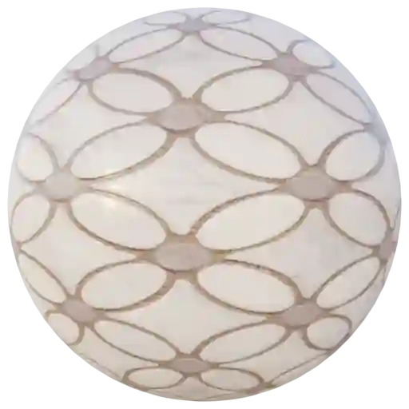{kind=link}
Decorative Beige Tiles 002ïƒ
{kind=link}
Decorative Beige Tiles 003ïƒ

Decorative Beige Tiles 004ïƒ
{kind=link}
Decorative Green Tiles 001ïƒ
{kind=link}
Decorative Green Tiles 002ïƒ

Double Bw Tiles 001ïƒ
{kind=link}
Double Green Tiles 001ïƒ
{kind=link}
Double Green Tiles 002ïƒ

Double White Tiles 001ïƒ

Marble Deco Bw 001ïƒ

Marble Deco Bw 002ïƒ
{kind=link}
Marble Deco Green 001ïƒ
{kind=link}
Marble Deco Green 002ïƒ
{kind=link}
Marble Deco Green 003ïƒ

Marble Deco Green 004ïƒ
{kind=link}
Pinwheel Tiles Black 001ïƒ
{kind=link}
Pinwheel Tiles Black 002ïƒ

Pinwheel Tiles Black 003ïƒ

Pinwheel Tiles Black 004ïƒ

Pinwheel Tiles White 001ïƒ

Pinwheel Tiles White 002ïƒ

Pinwheel Tiles White 003ïƒ

Tiles - Offset (Category)ïƒ
Offset Beige Tiles 001ïƒ
{kind=link}
Offset Beige Tiles 002ïƒ
{kind=link}
Offset Beige Tiles 003ïƒ

Offset Black Tiles 001ïƒ
{kind=link}
Offset Brown Tiles 001ïƒ
{kind=link}
Offset Green Tiles 001ïƒ

Offset Grey Tiles 001ïƒ
{kind=link}
Offset Grey Tiles 002ïƒ
{kind=link}
Offset Pink Tiles 001ïƒ

Offset White Tiles 001ïƒ
{kind=link}
Offset White Tiles 002ïƒ

Offset White Tiles 003ïƒ

Offset White Tiles 004ïƒ
{kind=link}
Offset White Tiles 005ïƒ
{kind=link}
Offset White Tiles 006ïƒ
{kind=link}
Subway Blue Tiles 001ïƒ

Subway Green Tiles 001ïƒ

Subway Green Tiles 002ïƒ

Subway Green Tiles 003ïƒ
{kind=link}
Subway Red Tiles 001ïƒ
{kind=link}
Subway White Tiles 001ïƒ

Subway White Tiles 002ïƒ

Subway Yellow Tiles 001ïƒ
{kind=link}
Tiles - Pattern Mix (Category)ïƒ
Random Beige Tiles 001ïƒ
{kind=link}
Random Beige Tiles 002ïƒ

Random Beige Tiles 003ïƒ

Random Black Tiles 001ïƒ

Random Blue Tiles 001ïƒ

Random Blue Tiles 002ïƒ

Random Brown Tiles 001ïƒ

Random Green Tiles 001ïƒ

Random Grey Tiles 001ïƒ
{kind=link}
Random Red Tiles 001ïƒ

Tiles - Various (Category)ïƒ
Azure 3D Cube Tiles 01ïƒ

Azure 3D Cube Tiles 02ïƒ

Azure Basketweave Tiles 01ïƒ
{kind=link}
Azure Basketweave Tiles 02ïƒ
{kind=link}
Azure Basketweave Tiles 03ïƒ

Azure Chevron Tiles 01ïƒ
{kind=link}
Azure Square Tiles 01ïƒ

Azure Square Tiles 02ïƒ

Azure Square Tiles 03ïƒ

Azure Square Tiles 04ïƒ

Azure Square Tiles 05ïƒ

Azure Stepping Stone Tiles 01ïƒ

Azure Stepping Stone Tiles 02ïƒ
{kind=link}
Azure Stepping Stone Tiles 03ïƒ

Azure Stepping Stone Tiles 04ïƒ

Azure Stepping Stone Tiles 05ïƒ
{kind=link}
Azure Stepping Stone Tiles 06ïƒ

Azure Windmill Tiles 01ïƒ
{kind=link}
Azure Windmill Tiles 02ïƒ

Azure Windmill Tiles 03ïƒ

Azure Windmill Tiles 04ïƒ

Azure Windmill Tiles 05ïƒ

Azure Windmill Tiles 06ïƒ

Azure Windmill Tiles 07ïƒ
{kind=link}
Azure Windmill Tiles 08ïƒ

Azure Windmill Tiles 09ïƒ

Black Tiles 01ïƒ
{kind=link}
Black Tiles 02ïƒ

Black Tiles 03ïƒ
{kind=link}
Black Tiles 04ïƒ

Black Tiles 05ïƒ

Black Tiles 06ïƒ

Dark Ocean Tiles 01ïƒ

Dark Ocean Tiles 02ïƒ

Dark Ocean Tiles 03ïƒ

Dark Ocean Tiles 04ïƒ

Dark Ocean Tiles 05ïƒ
{kind=link}
Dark Ocean Tiles 06ïƒ
{kind=link}
Dark Ocean Tiles 07ïƒ
{kind=link}
White Tiles 01ïƒ

White Tiles 02ïƒ

White Tiles 03ïƒ

White Tiles 04ïƒ

White Tiles 05ïƒ

White Tiles 06ïƒ

White Tiles 07ïƒ

White Tiles 08ïƒ

White Tiles 09ïƒ

Tools (Category)ïƒ
Holdoutïƒ

Transparentïƒ

Walls - Stones (Category)ïƒ
Cobblestone Wall 001ïƒ

Cobblestone Wall 002ïƒ
{kind=link}
Cobblestone Wall 003ïƒ
{kind=link}
Cobblestone Wall 004ïƒ
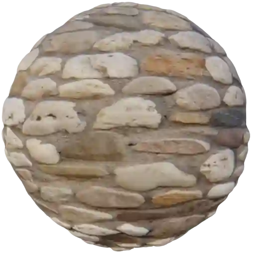{kind=link}
Defense Wall 01ïƒ

Dry Stone Wall 001ïƒ

Flagstone Wall 001ïƒ
{kind=link}
Medieval Blocks 001ïƒ

Medieval Blocks 002ïƒ

Medieval Blocks 003ïƒ

Medieval Blocks 004ïƒ

Medieval Wall 001ïƒ

Sandstone Blocks 001ïƒ
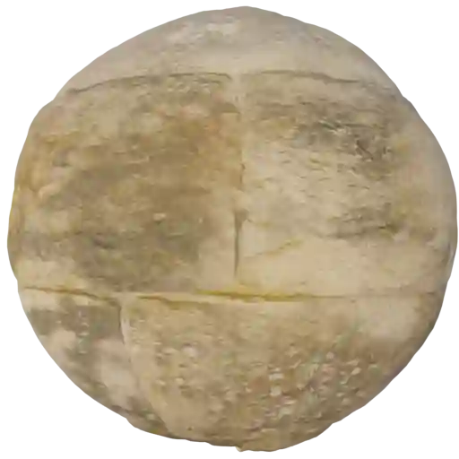{kind=link}
Sandstone Blocks 002ïƒ
{kind=link}
Sandstone Blocks 003ïƒ
{kind=link}
Sandstone Blocks 004ïƒ

Sandstone Blocks 005ïƒ

Sandstone Blocks 006ïƒ

Sandstone Blocks 007ïƒ

Sandstone Blocks 008ïƒ

Wall Stone 001ïƒ

Wall Stone 002ïƒ

Wall Stone 003ïƒ

Wall Stone 004ïƒ

Wall Stone 005ïƒ

Wall Stone 006ïƒ
{kind=link}
Wall Stone 007ïƒ
{kind=link}
Wall Stone 008ïƒ
{kind=link}
Wall Stone 009ïƒ

Wall Stone 010ïƒ
{kind=link}
Wall Stone 011ïƒ
{kind=link}
Wood - Bark (Category)ïƒ
Bark 001ïƒ

Bark 002ïƒ
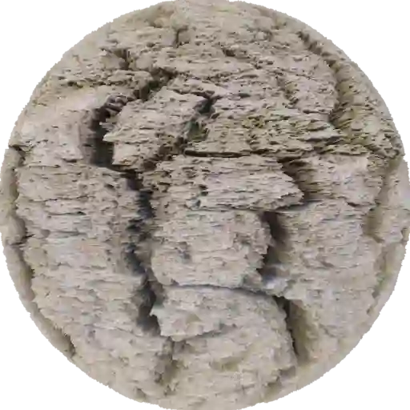{kind=link}
Bark 003ïƒ

Bark 004ïƒ

Bark 005ïƒ

Bark 006ïƒ
{kind=link}
Bark 007ïƒ
{kind=link}
Bark 008ïƒ

Bark 009ïƒ
{kind=link}
Bark 010ïƒ

Bark 011ïƒ

Bark 012ïƒ

Bark 013ïƒ

Bark 014ïƒ

Bark 015ïƒ
{kind=link}
Bark 016ïƒ
{kind=link}
Bark 017ïƒ
{kind=link}
Bark 018ïƒ

Bark 019ïƒ

Bark 020ïƒ

Bark 021ïƒ

Bark 022ïƒ
{kind=link}
Bark 023ïƒ

Bark 024ïƒ

Bark 025ïƒ
{kind=link}
Bark 026ïƒ
{kind=link}
Bark 027ïƒ

Bark 028ïƒ

Bark 029ïƒ

Bark 030ïƒ

Bark 031ïƒ

Bark 032ïƒ
{kind=link}
Wood - Derived (Category)ïƒ
Chipboards 001ïƒ

Chipboards 002ïƒ

Chipboards 003ïƒ
{kind=link}
Chipboards 004ïƒ
{kind=link}
Cork 01ïƒ

Wood Chips 01ïƒ
{kind=link}
Wood Chips 02ïƒ
{kind=link}
Wood - Painted (Category)ïƒ
Black Paint Wood 01ïƒ
{kind=link}
Blue Paint Wood 01ïƒ

Green Paint Wood 01ïƒ
{kind=link}
Red Paint Wood 01ïƒ

Yellow Paint Wood 01ïƒ

Wood - Plain (Category)ïƒ
Wood Plain 001ïƒ

Wood Plain 002ïƒ

Wood Plain 003ïƒ

Wood Plain 004ïƒ

Wood Plain 005ïƒ
{kind=link}
Wood Plain 006ïƒ

Wood Plain 007ïƒ
{kind=link}
Wood Plain 008ïƒ
{kind=link}
Wood Plain 009ïƒ
{kind=link}
Wood Plain 010ïƒ
{kind=link}
Wood Plain 011ïƒ
{kind=link}
Wood Plain 012ïƒ
{kind=link}
Wood Plain 013ïƒ
{kind=link}
Wood Plain 014ïƒ
{kind=link}
Wood Plain 015ïƒ

Wood Plain 016ïƒ
{kind=link}
Wood Plain 017ïƒ

Wood Plain 018ïƒ

Wood Plain 019ïƒ
{kind=link}
Wood Plain 020ïƒ
{kind=link}
Wood Plain 021ïƒ
{kind=link}
Wood Plain 022ïƒ
{kind=link}
Wood Plain 023ïƒ
{kind=link}
Wood Plain 024ïƒ

Wood Plain 025ïƒ
{kind=link}
Wood - Plain Dark (Category)ïƒ
Wood Plain Dark 001ïƒ
{kind=link}
Wood Plain Dark 002ïƒ

Wood Plain Dark 003ïƒ
{kind=link}
Wood Plain Dark 004ïƒ

Wood Plain Dark 005ïƒ

Wood Plain Dark 006ïƒ
{kind=link}
Wood Plain Dark 007ïƒ

Wood Plain Dark 008ïƒ

Wood Plain Dark 009ïƒ

Wood Plain Dark 010ïƒ

Wood Plain Dark 011ïƒ

Wood Plain Dark 012ïƒ
{kind=link}
Wood Plain Dark 013ïƒ
{kind=link}
Wood Plain Dark 014ïƒ
{kind=link}
Wood Plain Dark 015ïƒ

Wood Plain Dark 016ïƒ
{kind=link}
Wood Plain Dark 017ïƒ
{kind=link}
Wood Plain Dark 018ïƒ
{kind=link}
Wood Plain Dark 019ïƒ
{kind=link}
Wood Plain Dark 020ïƒ

Wood Plain Dark 021ïƒ
{kind=link}
Wood Plain Dark 022ïƒ

Wood Plain Dark 023ïƒ

Wood Plain Dark 024ïƒ

Wood Plain Dark 025ïƒ

Wood Plain Dark 026ïƒ

Wood Plain Dark 027ïƒ

Wood Plain Dark 028ïƒ

Wood Plain Dark 029ïƒ
{kind=link}
Wood Plain Dark 030ïƒ
{kind=link}
Wood Plain Dark 031ïƒ
{kind=link}
Wood - Plain Light (Category)ïƒ
Wood Plain Light 001ïƒ

Wood Plain Light 002ïƒ
{kind=link}
Wood Plain Light 003ïƒ
{kind=link}
Wood Plain Light 004ïƒ
{kind=link}
Wood Plain Light 005ïƒ
{kind=link}
Wood Plain Light 006ïƒ

Wood Plain Light 007ïƒ

Wood Plain Light 008ïƒ

Wood Plain Light 009ïƒ

Wood Plain Light 010ïƒ
{kind=link}
Wood Plain Light 011ïƒ
{kind=link}
Wood Plain Light 012ïƒ
{kind=link}
Wood Plain Light 013ïƒ

Wood Plain Light 014ïƒ

Wood Plain Light 015ïƒ

Wood Plain Light 016ïƒ
{kind=link}
Wood Plain Light 017ïƒ
{kind=link}
Wood Plain Light 018ïƒ

Wood Plain Light 019ïƒ

Wood - Planks (Category)ïƒ
Wood Planks Beige 001ïƒ

Wood Planks Beige 002ïƒ

Wood Planks Beige 003ïƒ

Wood Planks Beige 004ïƒ

Wood Planks Beige 005ïƒ
{kind=link}
Wood Planks Beige 006ïƒ

Wood Planks Beige 007ïƒ

Wood Planks Beige 008ïƒ

Wood Planks Beige 009ïƒ
{kind=link}
Wood Planks Beige 010ïƒ
{kind=link}
Wood Planks Beige 011ïƒ

Wood Planks Beige 012ïƒ
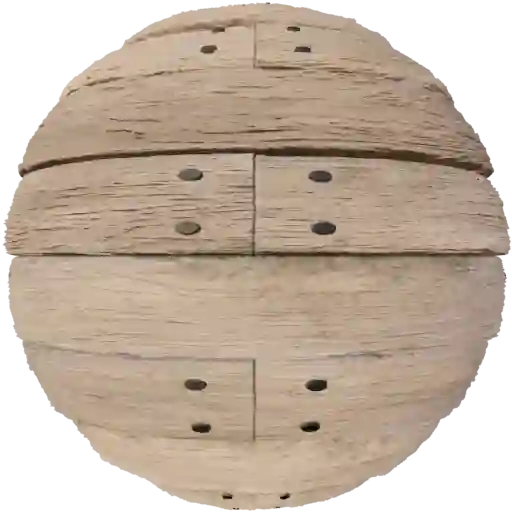{kind=link}
Wood Planks Beige 013ïƒ
{kind=link}
Wood Planks Brown 001ïƒ
{kind=link}
Wood Planks Brown 002ïƒ

Wood Planks Brown 003ïƒ

Wood Planks Brown 004ïƒ

Wood Planks Brown 005ïƒ
{kind=link}
Wood Planks Brown 006ïƒ

Wood Planks Brown 007ïƒ

Wood Planks Brown 008ïƒ

Wood Planks Brown 009ïƒ

Wood Planks Brown 010ïƒ

Wood Planks Brown 011ïƒ

Wood Planks Brown 012ïƒ
{kind=link}
Wood Planks Green 001ïƒ

Wood Planks Green 002ïƒ
{kind=link}
Wood Planks Green 003ïƒ
{kind=link}
Wood Planks Green 004ïƒ
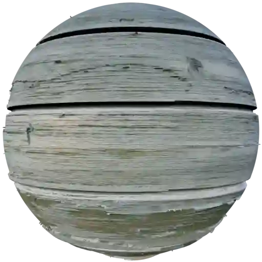{kind=link}
Wood Planks Grey 001ïƒ
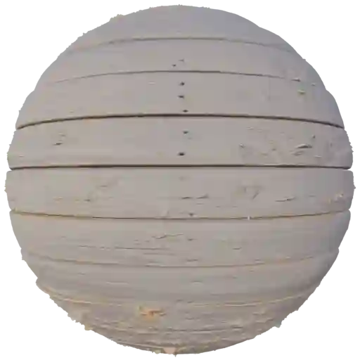{kind=link}
Wood Planks Medieval 001ïƒ

Wood Planks Moss 001ïƒ
{kind=link}
Wood Planks Moss 002ïƒ
{kind=link}
Wood Planks Moss 003ïƒ
{kind=link}
Wood Planks Moss 004ïƒ

Wood Planks Red 001ïƒ
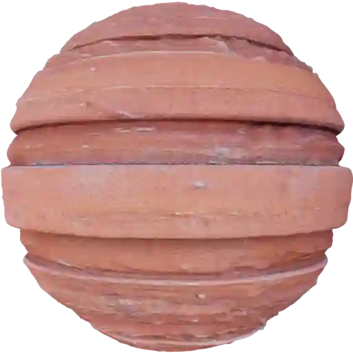{kind=link}
Wood Planks Red 002ïƒ
{kind=link}
Wood Planks Red 003ïƒ
{kind=link}
Wood Planks Red 004ïƒ

Wood Planks Red 005ïƒ

Wood Planks Walkway 001ïƒ
{kind=link}
Wood Planks Yellow 001ïƒ
{kind=link}
Wood Planks Yellow 002ïƒ
{kind=link}
Wood - Raw (Category)ïƒ
Wood Rustic 001ïƒ

Wood Rustic 002ïƒ
{kind=link}
Wood Rustic 003ïƒ
{kind=link}
Wood Rustic 004ïƒ

Wood - Timber (Category)ïƒ
Stacked Wood 01ïƒ

Trunk Cut 001ïƒ

Trunk Cut 002ïƒ
{kind=link}
Trunk Cut 003ïƒ
{kind=link}
Trunk Cut 004ïƒ

Trunk Cut 005ïƒ

Trunk Cut 006ïƒ

Trunk Cut 007ïƒ

Trunk Cut 008ïƒ
{kind=link}
Trunk Cut 009ïƒ

Trunk Cut 010ïƒ

Trunk Cut 011ïƒ

Trunk Cut 012ïƒ

Wood - Wall (Category)ïƒ
Bamboo Wall 001ïƒ

Beam Wooden Wall 001ïƒ

Wood Shingle Siding 001ïƒ

Wood Shingle Siding 002ïƒ
{kind=link}
Wood Shingle Siding 003ïƒ

Wood Shingle Siding 004ïƒ

Wood Siding 001ïƒ

Wood Siding 002ïƒ

Wood Siding 003ïƒ

Wood Siding 004ïƒ

Wood Siding 005ïƒ

Wood Siding 006ïƒ

Wood Siding 007ïƒ

Wood Siding 008ïƒ
{kind=link}
Wood Siding 009ïƒ

Wood Siding 010ïƒ

Wood Siding 011ïƒ

Wood Siding 012ïƒ

Wood Siding 013ïƒ
{kind=link}
Wood Siding 014ïƒ

{kind=link}